Genetics
Genetics Terms

X-Linked Recessive Diseases
Most common
The most common X-linked recessive disorders are:
- Red–green color blindness, a very common trait in humans and frequently used to explain X-linked disorders. Between seven and ten percent of men and 0.49% to 1% of women are affected. Its commonness may be explained by its relatively benign nature. It is also known as daltonism.
- Hemophilia A, a blood clotting disorder caused by a mutation of the Factor VIII gene and leading to a deficiency of Factor VIII. It was once thought to be the "royal disease" found in the descendants of Queen Victoria. This is now known to have been Hemophilia B (see below).
- Hemophilia B, also known as Christmas disease, a blood clotting disorder caused by a mutation of the Factor IX gene and leading to a deficiency of Factor IX. It is rarer than hemophilia A. As noted above, it was common among the descendants of Queen Victoria.
- Duchenne muscular dystrophy, which is associated with mutations in the dystrophin gene. It is characterized by rapid progression of muscle degeneration, eventually leading to loss of skeletal muscle control, respiratory failure, and death.
- Becker's muscular dystrophy, a milder form of Duchenne, which causes slowly progressive muscle weakness of the legs and pelvis.
- X-linked ichthyosis, a form of ichthyosis caused by a hereditary deficiency of the steroid sulfatase (STS) enzyme. It is fairly rare, affecting one in 2,000 to one in 6,000 males.
- X-linked agammaglobulinemia (XLA), which affects the body's ability to fight infection. XLA patients do not generate mature B cells. B cells are part of the immune system and normally manufacture antibodies (also called immunoglobulins) which defends the body from infections (the humoral response). Patients with untreated XLA are prone to develop serious and even fatal infections.
- Glucose-6-phosphate dehydrogenase deficiency, which causes nonimmune hemolytic anemia in response to a number of causes, most commonly infection or exposure to certain medications, chemicals, or foods. Commonly known as "favism", as it can be triggered by chemicals existing naturally in broad (or fava) beans.
Less common disorders
Theoretically, a mutation in any of the genes on chromosome X may cause disease, but below are some notable ones, with short description of symptoms:
- Adrenoleukodystrophy; leads to progressive brain damage, failure of the adrenal glands and eventually death.
- Alport syndrome; glomerulonephritis, endstage kidney disease, and hearing loss. A minority of Alport syndrome cases are due to an autosomal recessive mutation in the gene coding for type IV collagen.
- Androgen insensitivity syndrome; variable degrees of undervirilization and/or infertility in XY persons of either sex
- Barth syndrome; metabolism distortion, delayed motor skills, stamina deficiency, hypotonia, chronic fatigue, delayed growth, cardiomyopathy, and compromised immune system.
- Blue cone monochromacy; low vision acuity, color blindness, photophobia, infantile nystagmus.
- Centronuclear myopathy; where cell nuclei are abnormally located in skeletal muscle cells. In CNM the nuclei are located at a position in the center of the cell, instead of their normal location at the periphery.
- Charcot–Marie–Tooth disease (CMTX2-3); disorder of nerves (neuropathy) that is characterized by loss of muscle tissue and touch sensation, predominantly in the feet and legs but also in the hands and arms in the advanced stages of disease.
- Coffin–Lowry syndrome; severe mental retardation sometimes associated with abnormalities of growth, cardiac abnormalities, kyphoscoliosis as well as auditory and visual abnormalities.
- Fabry disease; A lysosomal storage disease causing anhidrosis, fatigue, angiokeratomas, burning extremity pain and ocular involvement.
- Hunter syndrome; potentially causing hearing loss, thickening of the heart valves leading to a decline in cardiac function, obstructive airway disease, sleep apnea, and enlargement of the liver and spleen.
- Hypohidrotic ectodermal dysplasia, presenting with hypohidrosis, hypotrichosis, hypodontia
- Kabuki syndrome (the KDM6A variant); multiple congenital anomalies and mental retardation.
- Spinal and bulbar muscular atrophy; muscle cramps and progressive weakness
- Lesch–Nyhan syndrome; neurologic dysfunction, cognitive and behavioral disturbances including self-mutilation, and uric acid overproduction (hyperuricemia)
- Lowe syndrome; hydrophthalmia, cataracts, intellectual disabilities, aminoaciduria, reduced renal ammonia production and vitamin D-resistant rickets
- Menkes disease; sparse and coarse hair, growth failure, and deterioration of the nervous system
- Nasodigitoacoustic syndrome; misshaped nose, brachydactyly of the distal phalanges, sensorineural deafness
- Nonsyndromic deafness; hearing loss
- Norrie disease; cataracts, leukocoria along with other developmental issues in the eye
- Occipital horn syndrome; deformations in the skeleton
- Ocular albinism; lack of pigmentation in the eye
- Ornithine transcarbamylase deficiency; developmental delay and mental retardation. Progressive liver damage, skin lesions, and brittle hair may also be seen
- Siderius X-linked mental retardation syndrome; cleft lip and palate with mental retardation and facial dysmorphism, caused by mutations in the histone demethylase PHF8
- Simpson–Golabi–Behmel syndrome; coarse faces with protruding jaw and tongue, widened nasal bridge, and upturned nasal tip
- Spinal muscular atrophy caused by UBE1 gene mutation; weakness due to loss of the motor neurons of the spinal cord and brainstem
- Wiskott–Aldrich syndrome; eczema, thrombocytopenia, immune deficiency, and bloody diarrhea
- X-linked severe combined immunodeficiency (SCID); infections, usually causing death in the first years of life
- X-linked sideroblastic anemia; skin paleness, fatigue, dizziness and enlarged spleen and liver.
Autosomal Dominant Diseases
More important examples
- Von Hippel–Lindau disease
- Von Willebrand disease
- Amyotrophic lateral sclerosis
- Retinoblastoma
- Multiple endocrine neoplasia
- Tuberous sclerosis
- Hereditary spherocytosis
- Huntington's disease
- Marfan syndrome
- Ehlers–Danlos syndromes
- Neurofibromatosis
- Familial adenomatous polyposis
Autosomal Recessive Disease
More important examples
- Alpha-1 antitrypsin deficiency
- Beta thalassemia
- Phenylketonuria
- Hereditary haemochromatosis
- Wilson's disease
- Bernard–Soulier syndrome
- Hartnup disease
- Glanzmann's thrombasthenia
- Fanconi syndrome
Trisomy (21, 18, and 13) & Nondisjunction Genetics
Prader-Willi vs. Angelman Syndrome
Hardy-Weinberg Equations & Genetics
X-linked Pedigrees
Trinucleotide Repeats
Biochemistry & Molecular Science
Notifiable Diseases
More important examples
- Hepatitis A
- Hepatitis B
- Hepatitis C
- HIV
- Syphilis
- Gonorrhea
- Measles
- Mumps
- Rubella
- Chicken Pox
- Tuberculosis
- Salmonella
- Shigella
P450 Enzyme System
CYP families in humans
Humans have 57 genes and more than 59 pseudogenes divided among 18 families of cytochrome P450 genes and 43 subfamilies. This is a summary of the genes and of the proteins they encode. See the homepage of the cytochrome P450 Nomenclature Committee for detailed information.
| Family | Function | Members | Genes | pseudogenes |
| CYP1 | drug and steroid (especially estrogen) metabolism, benzo(a)pyrene toxification (forming (+)-Benzo(a)pyrene-7,8-dihydrodiol-9,10-epoxide) | 3 subfamilies, 3 genes, 1 pseudogene | CYP1A1, CYP1A2, CYP1B1 | CYP1D1P |
| CYP2 | drug and steroid metabolism | 13 subfamilies, 16 genes, 16 pseudogenes | CYP2A6, CYP2A7, CYP2A13, CYP2B6, CYP2C8, CYP2C9, CYP2C18, CYP2C19, CYP2D6, CYP2E1, CYP2F1, CYP2J2, CYP2R1, CYP2S1, CYP2U1, CYP2W1 | Too many to list |
| CYP3 | drug and steroid (including testosterone) metabolism | 1 subfamily, 4 genes, 4 pseudogenes | CYP3A4, CYP3A5, CYP3A7, CYP3A43 | CYP3A51P, CYP3A52P, CYP3A54P, CYP3A137P |
| CYP4 | arachidonic acid or fatty acid metabolism | 6 subfamilies, 12 genes, 10 pseudogenes | CYP4A11, CYP4A22, CYP4B1, CYP4F2, CYP4F3, CYP4F8, CYP4F11, CYP4F12, CYP4F22, CYP4V2, CYP4X1, CYP4Z1 | Too many to list |
| CYP5 | thromboxane A2 synthase | 1 subfamily, 1 gene | CYP5A1 | |
| CYP7 | bile acid biosynthesis 7-alpha hydroxylase of steroid nucleus | 2 subfamilies, 2 genes | CYP7A1, CYP7B1 | |
| CYP8 | varied | 2 subfamilies, 2 genes | CYP8A1 (prostacyclin synthase), CYP8B1 (bile acid biosynthesis) | |
| CYP11 | steroid biosynthesis | 2 subfamilies, 3 genes | CYP11A1, CYP11B1, CYP11B2 | |
| CYP17 | steroid biosynthesis, 17-alpha hydroxylase | 1 subfamily, 1 gene | CYP17A1 | |
| CYP19 | steroid biosynthesis: aromatase synthesizes estrogen | 1 subfamily, 1 gene | CYP19A1 | |
| CYP20 | unknown function | 1 subfamily, 1 gene | CYP20A1 | |
| CYP21 | steroid biosynthesis | 1 subfamilies, 1 gene, 1 pseudogene | CYP21A2 | CYP21A1P |
| CYP24 | vitamin D degradation | 1 subfamily, 1 gene | CYP24A1 | |
| CYP26 | retinoic acid hydroxylase | 3 subfamilies, 3 genes | CYP26A1, CYP26B1, CYP26C1 | |
| CYP27 | varied | 3 subfamilies, 3 genes | CYP27A1 (bile acid biosynthesis), CYP27B1 (vitamin D3 1-alpha hydroxylase, activates vitamin D3), CYP27C1 (unknown function) | |
| CYP39 | 7-alpha hydroxylation of 24-hydroxycholesterol | 1 subfamily, 1 gene | CYP39A1 | |
| CYP46 | cholesterol 24-hydroxylase | 1 subfamily, 1 gene, 1 pseudogene | CYP46A1 | CYP46A4P |
| CYP51 | cholesterol biosynthesis | 1 subfamily, 1 gene, 3 pseudogenes | CYP51A1 (lanosterol 14-alpha demethylase) | CYP51P1, CYP51P2, CYP51P3 |
Drug Interactions

Vitamins
Vitamin |
Vitamers (incomplete) |
Deficiency disease(s) |
Overdose syndrome/symptoms |
Food sources |
||
|---|---|---|---|---|---|---|
all-trans-Retinol, Retinals, and |
Fat |
900 µg/700 µg |
from animal origin as Vitamin A / all-trans-Retinol: Fish in general, liver and dairy products; from plant origin as provitamin A / all-trans-beta-carotene: orange, ripe yellow fruits, leafy vegetables, carrots, pumpkin, squash, spinach |
|||
Water |
1.2 mg/1.1 mg |
Drowsiness and muscle relaxation |
Pork, wholemeal grains, brown rice, vegetables, potatoes, liver, eggs |
|||
Water |
1.3 mg/1.1 mg |
Dairy products, bananas, green beans, asparagus |
||||
Water |
16 mg/14 mg |
Liver damage (doses > 2g/day) and other problems |
Meat, fish, eggs, many vegetables, mushrooms, tree nuts |
|||
Water |
5 mg/5 mg |
Diarrhea; possibly nausea and heartburn. |
Meat, broccoli, avocados |
|||
Water |
1.3–1.7 mg/ |
Impairment of proprioception, nerve damage (doses > 100 mg/day) |
Meat, vegetables, tree nuts, bananas |
|||
Water |
AI: 30 µg/30 µg |
Raw egg yolk, liver, peanuts, leafy green vegetables |
||||
Water |
400 µg/400 µg |
Megaloblastic anemia and deficiency during pregnancy is associated with birth defects, such as neural tube defects |
May mask symptoms of vitamin B12 deficiency; other effects. |
Leafy vegetables, pasta, bread, cereal, liver |
||
Cyanocobalamin, Hydroxocobalamin, Methylcobalamin, Adenosylcobalamin |
Water |
2.4 µg/2.4 µg |
None proven |
Meat, poultry, fish, eggs, milk |
||
Water |
90 mg/75 mg |
Stomach Pain, Diarrhoea and Flatulence. |
Many fruits and vegetables, liver |
|||
Cholecalciferol (D3), Ergocalciferol (D2) |
Fat |
15 µg/15 µg |
Rickets and osteomalacia |
Eggs, liver, certain fish species such as sardines, certain mushroom species such as shiitake |
||
Fat |
15 mg/15 mg |
Deficiency is very rare; mild hemolytic anemia in newborn infants |
Possible increased incidence of congestive heart failure. |
Many fruits and vegetables, nuts and seeds, and seed oils |
||
Fat |
AI: 110 µg/120 µg |
Decreased anticoagulation effect of warfarin. |
Leafy green vegetables such as spinach; egg yolks; liver |
Glycolysis
Pyruvate Pathways & Metabolism
TCA/Citric Acid (Krebs) Cycle
Electron Transport Chain (Oxidative Phosphorylation)
HMP Shunt (Pentose Pathway)
Catecholamine Synthesis
Amino Acids
Urea Cycle
Fatty Acid Synthesis
Fatty Acid (Beta) Oxidation
Ketone Body Synthesis
Glutathione Pathways
Metabolic Fuel & Starvation
Lipid Transport
Familial Dyslipidemia’s
Glycogen Storage Diseases
Fructose Metabolism
Galactose Metabolism
Lysosomal Storage Diseases
Alcohol Metabolism
Types of Collagen
Pharmacology
High Yield USMLE
Antiarrhythmic agents
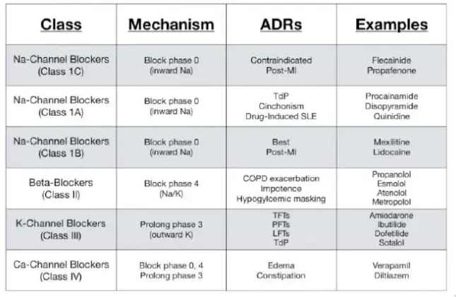
Gestational hypertension
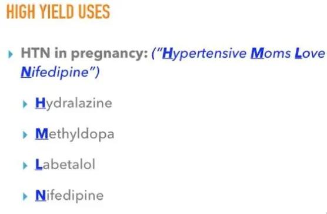
Side Effects
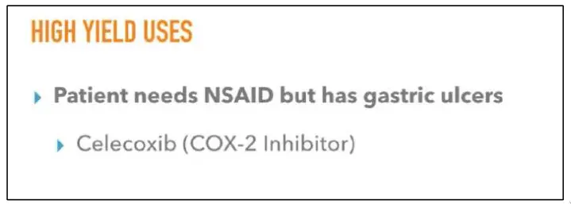 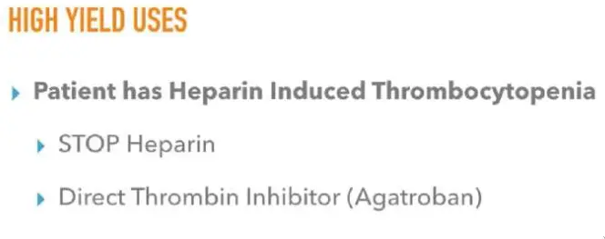 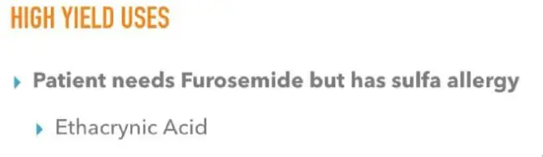 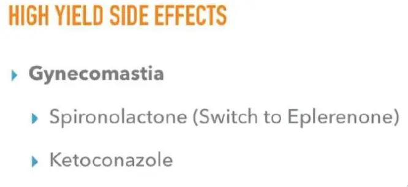 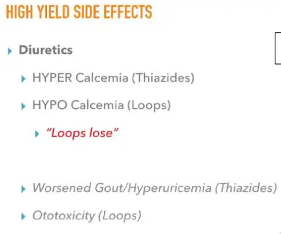 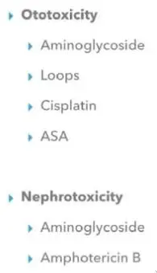 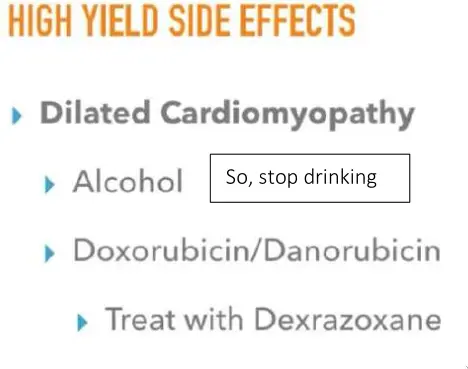 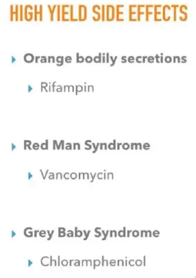 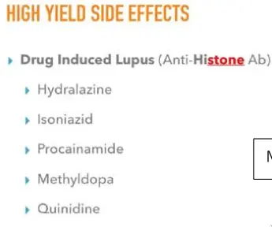 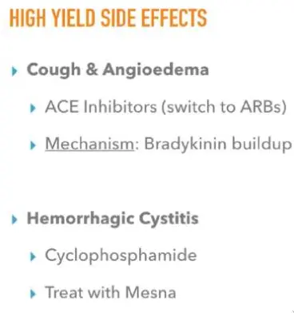 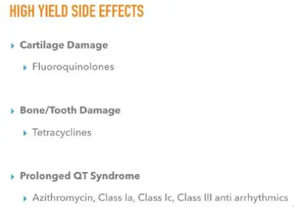 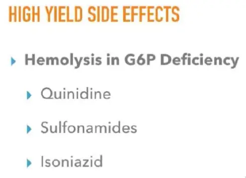
Tuberculosis management
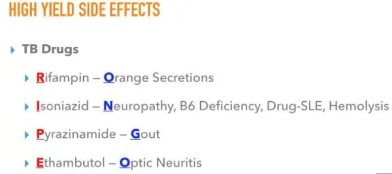
Alcoholism
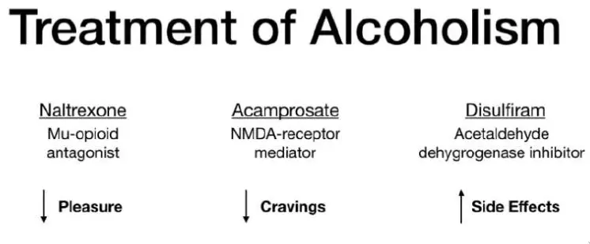
Monoclonal antibody
List of therapeutic monoclonal antibodies
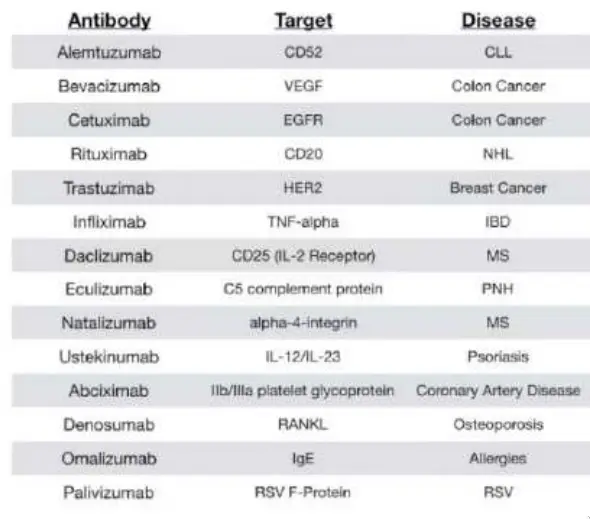
Pharmacodynamics and Weak Acids and Bases

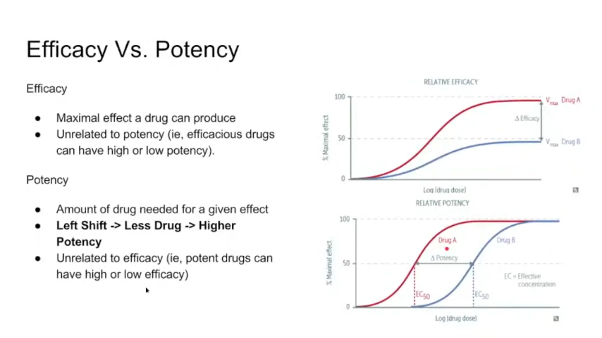

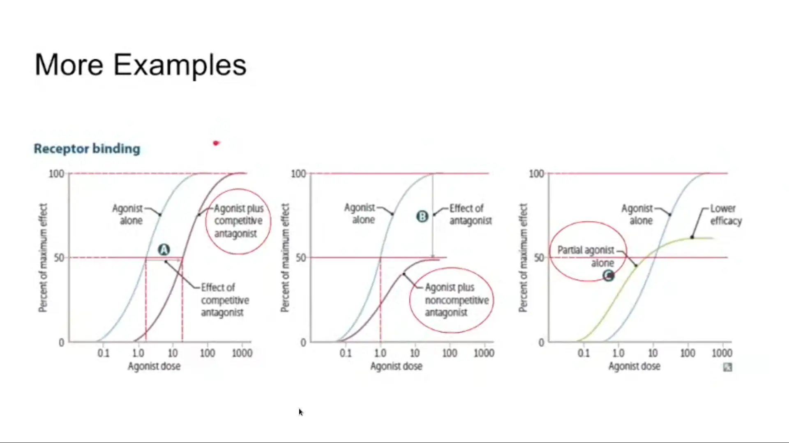
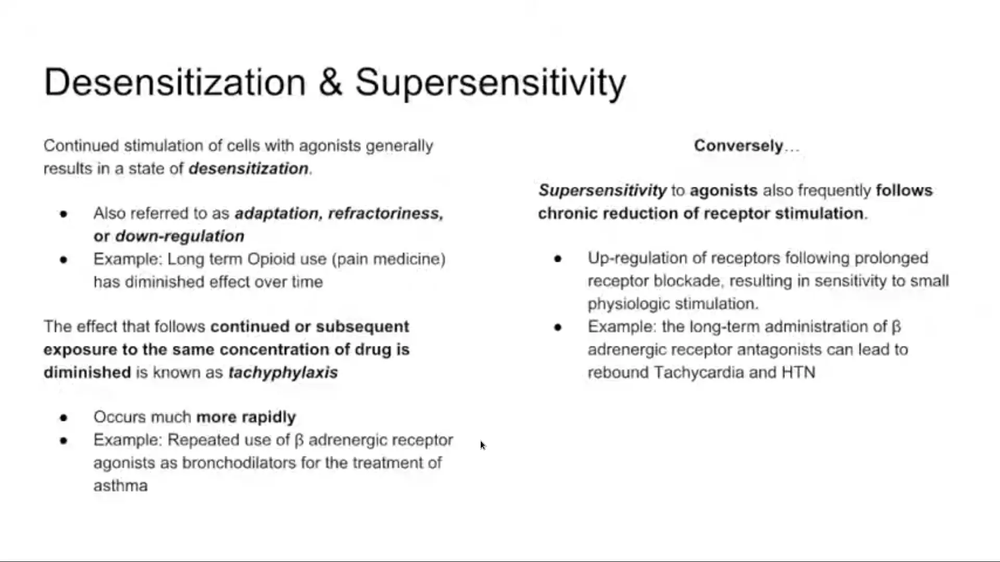
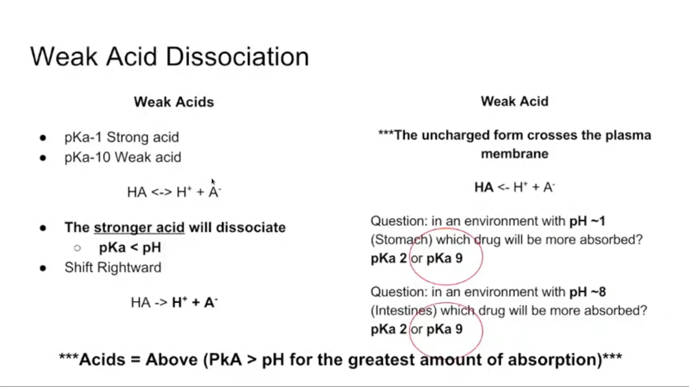
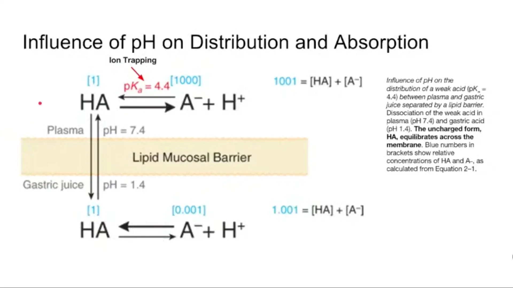
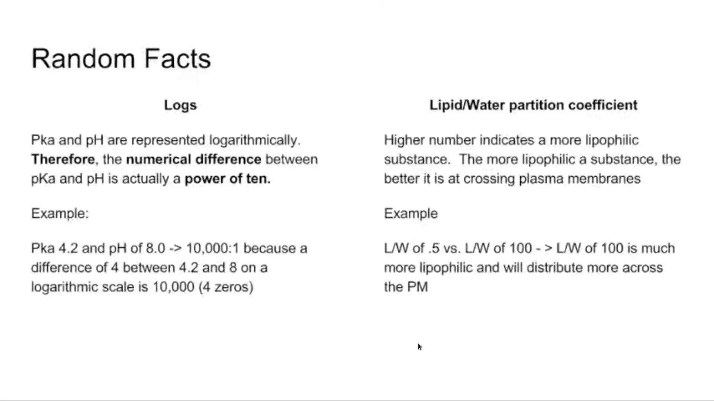
ADME and Pharmacokinetics
Antibiotics, Cell Wall Inhibitors
Antibiotics Big Picture
- Inhibit New base synthesis
- Inhibit folate synthesis: Sulfamethoxazole-Trimethoprim & Dapsone
- Alter DNA
- Inhibit DNA Over/Underwinding: Fluoroquinolones
- Alter DNA integrity: Metronidazole
- Inhibit Transcription
- Inhibit mRNA synthesis: Rifampin
- Inhibit Translation-Protein synthesis
- Inhibit Ribosome
- 30S Subunit: Aminoglycosides, Tetracyclines, Tigecycline
- 508 subunit: Chloramphenicol, Clindamycin, Linezolid, Macrolides
- Inhibit Ribosome
- Inhibit Bacterial Cell Wall
- Inhibit building blocks (Peptidoglycans) synthesis: Vancomycin, Bacitracin
- Inhibit Peptidoglycans cross linking (Beta Lactams): Penicillins, Cephalosporins, Carbapenems, Monobactams
- Disrupt cell membrane: Daptomycin
Some Important Bacterial Enzymes
- Bacterial cell wall
- Peptidoglycan (Sugar) linked with amino acids
- S. Aureus: Linked by D-alanine
- Transpeptidase (PCN Binding Proteins)
- Cross links Peptidoglycan chains to form a rigid wall
- Inhibited by all PCNs
- Penicillinase (Beta-Lactamase)
- Breaks down the beta lactam ring of PCN abx
- Mechanism of bacterial resistance
- Inhibited by beta-lactamase inhibitors (i.e. clavulanic acid)
Penicillins
Side Effect for all PCN
- Hypersensitivity allergic reaction
- Type I (IgE - urticaria & anaphylaxis)
- Type II (IgG mediated hemolytic anemia)
- Type III (serum sickness like)
Original PCN
PCN G, PCN V
- MOA:
- D-Alanine structural analogue
- Binds Transpeptidase (Penicillin binding proteins) and block crosslinking of peptidoglycan in bacterial cell wall
- Spectrum:
- Gram +ve (Strep mostly)
- Gram -ve (Neisseria)
- Spirochetes (Treponema)
- Uses:
- Strep Pharyngitis
- Syphilis
- Dental infections
- Side Effects:
- Direct Coombs +ve Hemolytic Anemia
Penicillinase Sensitive
Amoxicillin (PO) & Ampicillin (PO/IV)
- MOA: Same as PCN
- Spectrum:
- Same as PCN
- Plus H. Influenzae, H. Pylori, E. Coli, Listeria, Proteus, Salmonella, Shigella, Bnterococci
- Use
- Amoxicillin
- Strep Pharyngitis
- H. Pylori
- Ampicillin
- Listeria Meningitis (Elderly/Neonates)
- Group B Strep Meningitis Neonates
- Group B Strep Px in pregnancy
- Amoxicillin
- SE
- Allergic reaction
- C. Diff Colitis
Penicillinase Resistant
Dicloxacillin & Nafcillin & Oxacillin
- MOA: Same as PCN
- Spectrum: Narrow
- MSSA
- Group A Strep (S. Pyogenes)
- Use
- MSSA Infections
- Mastitis
- Dicloxacillin
- SE
- Interstitial Nephritis
Beta-Lactamase Inhibitors
Clavulanic acid & Sulbactam & Tazobactam
- MOA
- Protect PCN antibiotic from destruction by inhibiting bacterial Penicillinase (Beta-Lactamase) enzyme
- Use
- Amoxicillin/Clavulanate
- Piperacillin/Tazobactam
- Ampicillln/SuIbactam
- Ticarcillin/Clavulanate
Antipseudomonal Penicillins
Piperacillin & Ticarcillin
- Spectrum
- Broad spectrum
- Gram +ve (No MRSA)
- Gram -ve Pseudomonas & Nosocomial organisms
- Combined with beta-lactamase inhibitors
- Use
- Pseudomonas infections
- SE
- C. Diff Colitis
Cephalosporins
General Principles
- 5 Generations of Cephalosporins
- Spectrum Principles
- Generations 1-4:
- 1-> 4 = Increase gram -ve spectrum of activity
- Generation 5:
- Broad spectrum including MRSA
- Generations 1-4:
- MOA:
- Same as PCN
- Less susceptible to breakdown by Penicillinase
- Side Effects:
- Hypersensitivity (Low cross reactivity with PCN)
- Hemolytic Anemia
Specific Drugs
- 1st Generation: Cefazolin IV & Cephalexin PO
- 2nd Generation: Cefoxitin IV
- 3rd Generation: Ceftriaxone IV/IM & Ceftazidime IV
- 4th Generation: Cefepime IV
- 5th Generation: Ceftaroline IV
Cephalosporin Uses
1st Generation Cefazolin
- Spectrum: Gram +ve cocci (MSSA), Proteus, E.Coli, Klebsiella
- Uses: Skin infections, UTI
- Skin px prior to surgery: Cefazolin
2nd Generation Cefotaxime
- Spectrum: Above plus Neisseria, Serratia
- Uses: Abdominal infections & Pneumonia
3rd Generation Ceftriaxone & Ceftazidime
- Spectrum: Same as 2nd plus Nosocomial organisms
- Crosses BBB
- Ceftriaxone: Meningitis, Gonorrhea
- Ceftazidime: Pseudomonas
4th Generation Cefepime
- Spectrum: Same as 3rd plus Pseudomonas
5th Generation Ceftaroline
- MRSA, Enterococcus, Listeria
- No Pseudomonas
Aztreonam
- MOA
- Same as PCN
- Own class - 1 beta lactam ring
- Spectrum
- Gram -ve rods only (Pseudomonas)
- No Gram +ve or Anaerobes
- Use
- Penicillin allergic patients
- Does not cross react with PCNs
Carbapenems (Imipenem & Carbapenem)
- Suffix -penem
- MOA
- Same as PCN
- Spectrum: Broad & Heavy duty
- Gram +ve (but no MRSA)
- Gram -ve rods (Including pseudomonas)
- Anaerobes
- Use
- Life threatening gram -ve infections
- SE
- Seizures
- Meropenem has lowest risk
- Seizures
- Notes
- Imipenem combined with Cilastatin (which inhibits its renal degradation)
Vancomycin
- MOA
- Bind to D-ala D-ala inhibiting peptidoglycan synthesis inhibiting cell wall
- Spectrum: Gram +ve only
- Use
- IV: MRSA, S. Epidermidis, Enterococcus
- PO: C. Diff Colitis
- SE
- Nephrotoxicity
- Thrombophlebitis
- Red Man Syndrome
- Erythematous rash
- Nonspecific mast cell degranulation
- Tx: Antihistamines, slow infusion
Daptomycin
- MOA
- Create transmembrane channels disrupting cell membranes
- Cells can't maintain lons flow and membrane potential
- Create transmembrane channels disrupting cell membranes
- Spectrum: Gram +ve only
- Use
- MRSA Skin, bacteremia, Endocarditis
- VRE
- Inactivated in lungs (Not for Pneumonia)
- SE
- Rhabdomyolysis - Elevated CK
- Punches holes in the human muscle cells??
Protein-synthesis inhibitors
How can one inhibit ribosomal function?
- Inhibit Initiation Complex Formation (30S & 50S)
- Linezolid & Aminoglycosides
- Inhibit Peptide Elongation (50S)
- Chloramphenicol
- Inhibit Peptide Translocation (50S)
- Macrolides and Clindamycin
- Inhibit introduction of New Aminoacyl-tRNA (30S)
- Tetracycline
Aminoglycosides (30S)
Gentamicin & Neomycin & Amikacin Tobramycin & Streptomycin
- MOA:
- Primarily Binds 30S subunit & Irreversible inhibits initiation complex
- Additionally, misreading of mRNA and blocks translocation
- Require O2 for uptake; therefore ineffective against anaerobes
- Primarily Binds 30S subunit & Irreversible inhibits initiation complex
- Spectrum:
- Primarily Gram (-) including Pseudomonas
- Synergy for Gram (+) (staph, strep, enterococcus — variable)
- Side Effects:
- Nephrotoxicity — acute tubular necrosis
- Reversible
- Ototoxicity — loss of hearing. High frequency lost first
- NOT REVERSIBLE
- Another example is Loop diuretics
- Neuromuscular blockade
- Teratogen
- Nephrotoxicity — acute tubular necrosis
Tetracyclines (30S)
Tetracycline & Doxycycline & Minocycline
- MOA:
- Bind to 30S and prevent attachment of aminoacyl-tRNA to A site
- Especially effective against intracellular pathogens
- Uses:
- Borrelia burgdorferi, M pneumoniae, rickettsia and chlamydia, acne
- Many zoonotics
- Doxycycline effective against MRSA (Community Acquired)
- Side Effects
- Gl distress, discoloration of teeth in children, inhibition of bone growth in children, photosensitivity
- Contraindicated in pregnancy
- Chelates with antacids
Glycylcyclines
Tigecycline
MOA: Tetracycline derivative Uses: Broad-spectrum anaerobic, gram - , and gram + coverage. Multidrug-resistant (MRSA & VRE)
Chloramphenicol & Clindamycin (50S)
Chloramphenicol
- MOA: Blocks Peptidyl Transferase at 50S ribosomal subunit and Prevent protein chain elongation
- Uses
- H.influenzae, N. meningitidis, S. pneumoniae, Rickettsia rickettsii.
- Side Effects:
- Aplastic Anemia
- Gray baby syndrome
- Premature infants lack liver UDP-glucuronyltransferase therefore can’t metabolize drug
- Avoid in pregnancy
Clindamycin
- MOA: Binds to 50S and Blocks Translocation
- Movement of newly made peptide chain into the P site from A site
- Uses:
- Anaerobic infections (eg, Bacteroides spp., Clostridium perfringens )
- Aspiration pneumonia, lung abscesses, and oral infections
- Group A strep
- Side Effects:
- Pseudomembranous colitis (C diff)
Linezolid (50S)
- MOA: Bind 50S and prevent formation of initiation complex
- Uses: Vancomycin resistant Enterococcus (VRE) & MRSA
- Side Effects:
- Bope marrow suppression (especially thrombocytopenia)
- Serotonin syndrome
- Weak MAO Inhibitor
Serotonin Syndrome
- Cause: Any drugs causing increase in serotonin
- Symptoms
- Hyperreflexia
- Diaphoresis, Diarrhea
- Agitation
- Treatment
- Serotonin antagonist (Cyproheptadine)
Macrolides (50S)
Azithromycin & clarithromycin & & erythromycin
- MOA:
- Binds to the 23S rRNA of the 50S
- Blocks Translocation
- Movement of Newly made peptide chain into the P site from A site
- Uses:
- Atypical pneumonias (Mycoplasma, Chlamydia, Legionella )
- STis (Chlamydia)
- gram + cocci (streptococcal infections in patients allergic to penicillin)
- B. pertussis
- Side Effects:
- Gastrointestinal Motility
- QT Prolongation
Misc Antibiotics
Sulfonamides
Sulfamethoxazole (SMX) & Sulfadiazine
- MOA: Inhibit folate synthesis via blocking Dihydropteroate Synthase
- Uses
- Gram + & Gram -
- Nocardia
- Simple UTI
- PCP/PJP Treatment and prophylaxis
- Side Effects
- Hypersensitivity reactions
- Hemolysis
- G6PD deficiency
- Photosensitivity
- Stevens-Johnson syndrome
- Kernicterus (Jaundice baby)
- Displaces bilirubin bound to albumin
Anti-Folate Drugs
Trimethoprim
- MOA
- Inhibits Bacterial Dihydrofolate Reductase
- Use
- In combination with sulfonamides-Trimethoprim-sulfametho xazole (TMP/SMX) - Bactrim
- Synergy
- UTls, Shigella, Salmonella, Pneumocystis jirovecii pneumonia treatment and prophylaxis, toxoplasmosis prophylaxis.
Fluoroquinolones
Ciprofloxacin & Levofloxacin & Suffix -Floxacin
- MOA: Inhibit prokaryotic Topoisomerase II (DNA Gyrase) and topoisomerase IV
- Use
- Gram - rods of urinary and Gl tracts (Pseudomonas)
- Some gram + organisms
- SE
- Achilles Tendonitis or tendon rupture
- Contraindicated in Elderly and Children
- Prolong QT interval
- Achilles Tendonitis or tendon rupture
- Clinical Pearls
- No antacids (Chelation)
Metronidazole
- MOA:
- Forms toxic free radicals
- Damages bacterial cell DNA
- Forms toxic free radicals
- Uses:
- Protozoa: Giardia, Entamoeba, Trichomonas, Gardnerella vaginalis
- Anaerobes (Bacteroides, C difficile)
- Side Effects:
- Disulfiram-like reaction
- Severe flushing with alcohol
- Metallic taste
- Disulfiram-like reaction
Nitrofurantoin & Rifampin
Nitrofurantoin
- MOA: Not understood
- Use: E. Coli, Uncomplicated UTI
- Concentrates in urine
- SE
- Turns urine brown color (Harmless)
- Pulmonary Fibrosis
Rifampin
- MOA: inhibits bacterial DNA-dependent RNA polymerase
- Use:
- Mycobacteria (TB, Leprosy)
- Haemophilus influenza B Prophylaxis
- Neisseria Meningitis Prophylaxis
- Side Effects:
- Heme: Thrombocytopenia, leukopenia, anemia
- Renal: Nephritis and proteinuria
- Red-orange color excreted fluids (urine, sweat, tears)
- Induce CYP 450 - decreases effectiveness of PO contraceptives
Antibiotic Spectrum Overview
Penicillins
- PCN V Narrow spectrum
- Strep, Syphilis, Actinomycosis
- Amp/Amox
- Strep, Gram -ve rods (E. Coli, Proteus, Salmonella, Shigella), Listeria, H. Pylori
- Nafcillin/Oxacillin
- Methicillin sensitive S. Aureus (MSSA)
- Pip/Tazo - Broad spectrum
- Pseudomonas & Nosocomials
- Carbapenems - Very Broad
- Gram +ve & Pseudomonas
- Aztreonam
- Pseudomonas
Cephalosporins
- 1st Gen - Cefazolin & Cephalexin
- Gram +ve cocci (MSSA, Strep) and some Gram -ve rods (E.Coli, klebsiella)
- 2nd Gen - Cefoxitin:
- Above + Neisseria & Serratia
- 3rd Gen - Greater Gram -ve coverage
- Ceftriaxone
- Used for Meningitis/Gonorrhea/PNA
- Ceftazidime
- Gram +ve plus Pseudomonas
- Ceftriaxone
- 4th Gen - Cefepime
- Gram +ve and Gram -ve including Pseudomonas
- 5th Gen - Ceftaroline
- MRSA and Gram -ve but No Pseudomonas
Protein Synthesis inhibitors
- 50S Inhibitors
- Aminoglycosides
- Gram -ve including Pseudomonas
- Used with PCNs (Synergy) for Gram +ve
- Tetracyclines
- Zoonotics, intracellular organisms, atypicals, CA MRSA
- Tigecycline
- Very Broad Spectrum
- Gram +ve including MRSA & VRE, Gram -ve (Except Pseudomonas), and anaerobic
- Aminoglycosides
- 30S Inhibitors
- Clindamycin
- Anaerobes above the waist & CA MRSA
- Linezolid
- Gram +ve including MRSA & VRE
- Macrolides
- Intracellular organisms, atypicals, Strep, MAC
- Clindamycin
Miscellaneous Agents
- Vancomycin
- IV used for MRSA, PO used for C. Diff
- Daptomycin
- Gram +ve (MRSA & VRE)
- Fluoroquinolones
- Gram -ve including pseudomonas, Mycobacteria, and atypicals
- Metronidazole
- Protozoa, Anaerobes below the waist, C. Diff, H. Pylori
- SMX/TMP
- Some Gram +ve (Nocardia), Gram -ve (E. Coli), PCP/PJP, Toxoplasma prophylaxis
MRSA & Pseudomonas Agents
- MRSA
- Community Acquired:
- TMP-SMX
- Doxycycline
- Clindamycin
- Healthcare Associated:
- Vancomycin
- Daptomycin
- Linezolid
- Tigecycline
- Ceftaroline
- 5th Generation Cephalosporin
- Only one with MRSA coverage
- Community Acquired:
- Pseudomonas
- Piperacillin/Tazobactam (Zosyn)
- Aminoglycosides
- Aztreonam
- Ceftazidime (3rd Gen Cephalosporin)
- Cefepime (4th Gen Cephalosporin)
- Carbapenems
- Meropenem, Imipenem, Etc.
- Fluoroquinolones
- Ciprofloxacin, Levofloxacin, Etc.
Antibiotic Resistance
- Penicillins
- Penicillinase (beta-lactamase)
- Cleaves b-lactamase ring
- Original PCN & Amoxicillin
- Altered Peplidase (PCN BindingLPro(ein)
- PCNs & Cephalosporins
- Mutated Porin
- Drugs can not diffuse into cell
- Penicillinase (beta-lactamase)
- Vancomycin
- Mutated Peptidoglycan cell wall
- Bacteria uses D-Ala D-Lac instead of D-Ala D-Ala
- Impaired influx / Increased efflux
- Mutated Peptidoglycan cell wall
- Quinolones
- Mutated DNA Gyrase (Chromosome)
- Efflux pump (Plasmid)
- Aminoglycosides
- Mutated Ribosomes
- Aminoglycosides modifying enzymes (Acetylation, phosphorylation, adenylation)
- Chloramphenicol
- Inactivation by plasmid encoded acetyltransferase
- Linezolid
- Point mutation of ribosomal RNA
- Macrolides
- Decreased binding due to 23s rRNA methylation
- Tetracyclines
- Decreased uptake / Increased efflux
- Rifamycins
- Mutated RNA Polymerase
- Anti Folates
- Mutated or Increased folate synthesis enzymes
Antibiotics, Protein Synthesis Inhibitors
Antibiotics, MISC
Anti-Fungal Agents
- Antifungals General Principles
- Fungus Overview
- Azoles
- Echinocandins
- Amphotericin B
- Nystatin
- Flucytosine
- Griseofulvin
- Terbinafine
Antifungals General Principles
Fungus
- Special Fungal Characteristics
- Cell Membrane: Ergosterol (Cholesterol-like)
- Sequence of synthesis: Squalene-Squalene epoxide-Lanosterol-Ergosterol
- Cell Wall: Glucans (Glucose polymers)
How to kill fungus?
- Inhibit Cell MEMBRANE synthesis
- Inhibit Lanosterol synthesis: Terbinafine
- Inhibit Ergosterol synthesis: Azoles
- Inhibit Cell WALL synthesis
- Inhibit B-Glucans synthesis: Echinocandins (-Fungins)
- Punch holes in Ergosterol: Amphotericin, Nystatin
- Inhibit DNA/RNA synthesis: Flucytosine
- Inhibit Mitosis: Griseofulvin
Fungus Overview
Systemic Fungus
- Histoplasmosis, Blastomycosis , Coccidioidomycosis, Paracoccidioidomycosis
- Treatment: Azoles & Amphotericin for severe infections
Cutaneous Fungus
- Malassezia Furfur
- Dermatophytes (Tinea)
- Sporothrix
- Treatment: Topical Azoles, Terbinafine, Griseofulvin, Potassium lodide
Opportunistic
- Candida
- Aspergillus
- Cryptococcus
- Mucormycosis
- Pneumocystis Jiroveci (PCP)
- Treatment
- Azoles, Echinocandins, Amphotericin, Nystatin, Flucytosine
- PCP - SMX/TMP or Dapsone
Azoles
Clotrimazole & Fluconazole & Itraconazole & Ketoconazole & Miconazole & Voriconazole & Suffix -Azole
MOA:
- Inhibits 14-a-demethylase
- Converts Lanosterol to Ergosterol (Cell Membrane)
Uses:
- Local and less severe fungal infections
- Topical - 1st line for Dermatophytes
- Fluconazole - Chronic cryptococcal meningitis (AIDs) & most candidal infections
- ltraconazole - Blasto, Coccidio, Histo
- Clotrimazole and Miconazole - Topical
- Voriconazole - Aspergillus and Invasive Candida
Side Effects:
- Testosterone synthesis inhibition
- Gynecomastia -> Ketoconazole
- Liver Dysfunction
- 14-a-demethylase is a CYP450-like enzyme!
Azoles - Specific Side Effects
Ketoconazole
- Side Effects:
- Gynecomastia, decreased libido, ED, menstrual irrggularities
- Inhibition of adrenal steroidogenesis
- Hepatotoxic
Fluconazole
- Least CYP interactions & Lowest range of activity
- CSF penetration
- Safest Azole
- Side Effects:
- QT Prolongation
Itraconazole
- Side Effects:
- Hepatotoxic
- Visual disturbances
Voriconazole
- Side Effects:
- Visual disturbances, SJS, Hepatotoxic, Hallucinations, Confusion
Echinocandins
Caspofungin & Micafungin & Suffix -fungin
MOA: Inhibits B-glucan synthesis (Cell wall)
Uses: Invasive Aspergillosis & Candida
Side Effects: Gl upset & flushing
Amphotericin B
MOA: Binds ergosterol and forms holes (pores) in membrane
- Allows for electrolyte leakage
Use: Serious systemic & opportunistic mycoses
Infusion reactions
- Fevers, chills, muscles spasms, hypotension
Side Effects
- Renal: Nephrotoxic, Low K, Low Mg
- Infusion related: Fever & pain
- Others: Increased LFTs, anemia, thrombocytopenia, leukopenia
Liposomal formulation
- Less infusion reaction
- Less Nephrotoxicity
Can use in pregnancy
Nystatin
MOA: Same as Amphotericin
Use:
- Oral Candida (Swish and Swallow)
- Diaper rash/Vaginal Candida (Topical)
Flucytosine
MOA
- Converted to 5 FU by cytosine deaminase
- 5FU incorporated into DNA/RNA, leads to chain termination, inhibiting DNA/RNA synthesis
Use
- Cryptococcal Meningitis (Combined with Amphotericin B)
Side Effects
- Bone marrow suppression
Griseofulvin
MOA
- Inhibit Microtubules inhibiting mitosis
- Deposits in ko:atin tissues (Nails)
Use
- Superficial dermatophytes mainly Tinea Capitis
- Rarely used 2/2 SE
SE
- Teratogenic
- Induce CYP450
- Decrease warfarin, OCP levels
Side note Drugs that inhibit Microtubules
- Griseofulvin
- Mebendazole
- Colchicine
- Vincristine/Vinblastine
- Paclitaxel
Terbinafine
MOA
- Inhibit squalene epoxide inhibiting ergosterol synthesis inhibiting cell membrane synthesis
Use
- Dermatophytes
- 1st line for Onychomycosis
Note: Azole is the 1st line for topical dermatophytes
SE
- Hepatotoxicity
Anti-Tuberculosis Drugs
- Anti-Mycobacterial Agents General Principles
- Anti-Mycobacterial TB
- Anti-Mycobacterium Leprae & Mycobacterium Avium Complex Agents
- Disease Summary - Mycobacteria
Anti-Mycobacterial Agents General Principles
- 3 Important organisms
- Mycobacteria Tuberculosis
- Mycobacterium Avium Complex
- Mycobacterium Leprae
- How is Mycobacteria different?
- Cell wall
- Mycolic acid (Long chain fatty acids)
- Arabinogalactan
- Peptidoglycan
- Cell wall
- How to kill Mycobacteria?
- Inhibit Cell wall synthesis
- Inhibit Mycolic acid synthesis: Isoniazid
- Inhibit Arabinogalactan polymerization: Ethambutol
- Inhibit Transcription
- Inhibit mRNA synthesis: Rifampin
- Inhibit Protein Synthesis: Aminoglycosides (Streptomycin)
- Inhibit new base synthesis
- Inhibit folic acid synthesis: SMX-TMP, Dapsone
- Inhibit DNA unwinding: Fluoroquinolone
- Unknown: Pyrazinamide
- Inhibit Cell wall synthesis
Anti-Mycobacterial TB
Rifampin & Rifabutin
MOA: inhibits bacterial DNA-dependent RNA polymerase
Use:
- Mycobacteria (TB, Leprosy)
- Haemophilus influenza B Prophylaxis
- Neisseria Meningitis Prophylaxis
Rifabutin: Cousin with less Drug interactions- Preferred in HIV patients
Side Effects:
- Heme: Thrombocytopenia, leukopenia, anemia. Hyperbilirubinemia
- Renal: Nephritis and proteinuria
- Red-orange color excreted fluids (urine sweat, tears)
- Induce CYP 450 - decreases effectiveness of PO contraceptives
Resistance: Mutations in binding to RNA Polymerase
Isoniazid (INH)
MOA: Inhibits mycolic acid synthesis
Use:TB
Metabolism
- "Histone Acetylation"
- Patients can be slow or fast Acetylators
Side Effects:
- B6 Neuropathy
- Seizures (related to B6 Deficiency)
- Sideroblastic Anemia
- Hepatotoxicity
- Anion gap metabolic acidosis (MUD PIILES)
- Drug induced Lupus - Anti-Histone antibodies
Resistance
- INH is processed by intracellular catalase peroxidase
- Resistance is decreased activity of this enzyme
Side Note: Drug Induced Lupus (Hydralazine, Isoniazid, Procainamide)
Pyrazinamide
MOA: Unknown - Works in acidic environment (Phagolysosomes)
Use: Part of RIPE
Side Effects: Hepatotoxic
Ethambutol
MOA: Inhibit Arabinosyl transferase which polymerizes arabinogalactan (Carbohydrate Part of TB cell wall)
Use: Part of RIPE
Side Effects: Optic Neuropathy - Red/Green color blindness
2nd line Agents
- Aminoglycosides (Streptomycin)
- Fluoroquinolones (Ciprofloxacin, Levofloxacin)
3rd line Agents
- P-Aminosalicylic acid (Blocks folic acid)
- Ethionamide (Blocks mycolic acid)
- Cycloserine (Inhibits cell wall)
Anti-Mycobacterium Leprae & Mycobacterium Avium Complex Agents
Mycobacterium Leprae (Leprosy)
Dapsone MOA:
- Folic acid antagonist
Use
- Leprosy both types
- PCP if patient has sulfa allergy
Side Effects:
- Hemolysis with G6PD deficiency
Other Drugs used for Leprosy
- Rifampin
- Clofazimine
Mycobacterium Avium Complex (MAC)
AIDS defining illness
Need to prophylax HIV patients if CD4< 50
Drugs used for MAC
- Multi drug treatment
- Azithromycin 1st line
- Clarithromycin
- Ethambutol
- Rifaputin
Disease Summary - Mycobacteria
Active Mycobacterium Tuberculosis
- Be Aware of Directly Observed Treatment (DOT)
- 1st line
- RIPE
- MDR
- High dose RIPE
- Aminoglycosides X
- Fluoroquinolone
- XDR (Extra resistant)
- Ethionamide
- Cycloserine
- P-Aminosalicylic acid
Mycobacterium Avium Complex (MAC)
- 1st: Azithromycin
- 2nd: Ethambutol, Rifabutin
Mycobacterium Leprae (Leprosy)
- Tuberculoid type (Th1)
- Dapsone + Rifampin
- Lepromatous type (Th2)
- Dapsone + Rifampin + Clofazimine
Malaria
Misc Parasites
Anti-virals & HIV
- Antivirals
- HIV Treatment
Antivirals
Antivirals General Principles
Goal: Prevent viral replication
Nucleoside vs. Nucleotide
- Nucleoside: Base + Sugar
- Nucleotide: Base + Sugar + Phosphate
How?
- Terminate replicating chain- Inhibit viral DNA Polymerase
- NucleoSIDE analogue: Acyclovir, Ganciclovir, Trifluridine
- NucleoTIDE analogue: Cidofovir
- Directly inhibit DNA/RNA Polymerase
- Foscarnet
- Inhibit new base synthesis X
- Ribavirin
- Inhibit virion release from cells
- Oseltamivir
- Inhibit viral uncoating
- Amantadine
Herpes/Varicella Zoster/CMV
Acyclovir & VALAciclovir
MOA
- Guanosine analogue (NucleoSIDE)- Phosphorylated by viral thymidine Kinase, inhibits viral DNA polymerase by chain termination.
- Prefers viral cells
Use
- HSV Encephalitis and Ulcers
- VZV
SE
- Concentrates in kidneys - Acute renal failure if dehydrated
Ganciclovir & VALGANCciclovir
MOA
- Guanosine analogue (NucleoSIDE), phosphorylated by CMV viral kinase, inhibits DNA polymerase
- Goes into viral and human cells
Use
- CMV
- Retinitis, systemic, prophylaxis in transplant patients
SE
- More toxic than acyclovir
- Bone marrow suppression (Neutropenia)
- Renal failure
Viral Respiratory Infections
Oseltamivir & Zanamivir
MOA: Neuraminidase Inhibitor
- Influenza virus attaches to host cell using hemagglutinin via sialic acid
- Neuraminidase cleaves sialic acid and allows virus to be release
- Drug inhibit viral progeny release from host cells by inhibiting Neuraminidase enzyme
Use
- Influenza A & B
- Use within 48 hours of sx
- Shortens duration of iliness
- Can be used as prophylaxis
SE
- Zanamivir- Inhaled-Bronchospasm
Ribavirin
MOA
- Inhibits IMP dehydrogenase
- Leading to inhibiting guanine nucleotide synthesis
- Leading to inhibiting viral mRNA synthesis
Use
- Aerosol - RSV in children
- Oral - Hepatitis B& C
SE
- Anemia
- Teratogenic
Amantadine
MOA Inhibits M2 protein used for viral uncoating
Not used for Flu anymore - Used for PD
Hepatitis
Interferon Alpha
MOA
- Interferes with viral protein synthesis
Use
- Hepatiis B/ C + Ribavirin - NOT CURATIVE
SE
- Depression
- Myopathy
- Neutropenia
Side note
- Interferon Alpha - Tx viral and cancer stuff
- Interferon Beta - Tx Multiple Sclerosis
- Interferon Gamma - Chronic Granulomatous Disease
Ribavirin
- Hepatitis B & C with interferon
Ledipasivir / Sofosbuvir (Harvoni) & Ledipasivir / Simeprevir
MOA
- Ledipasivir
- Inhibit NSSA (involved in viral replication)
- Sofosbuvir
- Incorporated into RNA and acts as chain terminator
- Inhibit RNA dependent DNA polymerase
- Simeprevir
- HCV protease inhibitor
Use
- Hepatitic C
- Harvoni - Curative in Combo
Cost
- $100,000 for 12 weeks
- $1000 per pill
Antivirals Summary
Viruses AND Drugs
- HSV= Acyclovir- Foscarnet-Trifluridine
- VZV= Acyclovir
- CMV= Ganciclovir- Foscarnet- Cidofovir
- Influenza= Oseltamivir, Amantadine
- RSV= Ribavirin
- HBV
- Tenofovir + Lamivudine
- Interferon + Ribavirin (Not prefered)
- HCV
- Curative = Ledipasvir/Sofosbuvir +/- Ribavirin
HIV Treatment
HIV Treatment General Principles
Goal: Prevent viral replication
How?
- Inhibit HIV fusion into host cells
- Prevent docking: Maraviroc
- Prevent fusion and entry: Enfuvirtide
- Inhibit reverse transcriptase
- Via nucleoSIDES: NRTI (Emtricitabine/Abacavir/Lamivudine/Zidovudine)
- Via nucleoTIDES: NtRTI (Tenofovir)
- Via non-nucleosides: NNRTI (Efavirenz)
- Inhibit HIV integration into host cell genome
- Integrase inhibitors (Suffix-gravir)
- Inhibit new virus maturation
- Protease Inhibitors: (Suffix-navir)
Nucleoside Reverse Transcriptase Inhibitors (NRTIs)
Emtricitabine & Abacavir & Lamivudine & Zidovudine
MOA
- Inhibit nucleotide binding to reverse transcriptase - Terminate DNA chain
- Need to be phosphorylated
Use
- Backbone of HAART
- Lamivudine= HIV + Hepatitis B
- Zidovudine
- Pregnant HIV mothers
- Prophylaxis for infants @ risk
SE
- Abacavir - Hypersensitivity if HLA-B5701 mutation
- Zidovudine - Myelosuppression, Lipodystrophy
- Didanosine - Pancreatitis
Nucleotide Reverse Transcriptase Inhibitors (NtRTI)
Tenofovir
MOA
- Terminate DNA chain by inhibiting reverse transcriptase
- Does not need to be phosphorylated
Use
- Mainly used to boost levels of protease inhibitors (Booster)
- Tenofovir inhibits CYP 450
- Protease inhibitors are metabolized via CYP 450
- Active against Hepatitis B
Non-Nucleoside Reverse Transcriptase Inhibitors (NNRTI)
Efavirenz, Rilpivirine, Etravirine
MOA
- Inhibit reverse transcriptase @ site different than NRTI
- Do not need phosphorylation
Use
- HAART
SE
- Vivid dreams
- Contraindicated in pregnancy
Drug interactions
- Decrease levels of barbiturates and anticonvulsants
- Efavirenz levels will be decreased by Rifampin
Protease Inhibitors
Atazanavir & Lopinavir & Ritonavir &** Suffix **-navir
MOA
- Inhibit HIV 1 protease which cleaves HIV polypeptide products into functional parts
- Prevent maturation of new viruses
Use
- HAART
SE
- Lipodystrophy
- Hyperglycemia and Dyslipidemia
LOTS of drug interactions
- Ritonavir is used to boost levels of Pls
Integrase Inhibitors
Raltegravir (Suffix -gravir)
MOA
- Inhibit HIV integrase thus inhibiting HIV genome htegration into host cell chromosomes
Use
- HAART
SE
- Increase Creatine kinase
Fusion Inhibitors
Basics: HIV uses gp proteins to bind to host cells
- Gp-120: attaches to CCRS5 receptor on macrophages, CXCR4 on T cells
- Gp-41: required for fusion and entry
Enfuvirtide
MOA: Binds gp-41 (block entry) Use: Subcutaneous in HAART SE: Injection site rxn
Maraviroc
MOA: Binds CCRS5 - Inhibit attachment/Docking
HIV Summary
Who gets treated?
- HIV diagnosis regardless of CD4 count
- Especially if CD4 < 500
- AIDS defining illness
- Pregnant mothers, infants @ risk: Zidovudine
Regimens
- Combo to prevent resistance - usually 3 medications
- Backbone is 2 NRTI (Efavirenz, Emtricitabine or Abacavir)
- Plus one of the following
- Protease inhibitors
- Integrase inhibitors
- Fusion inhibitors
- NNRTI
Prophylaxis in HIV Patients
- Pneumocystis Jiroveci Pneumonia (PJP/PCP)
- CD4<200
- Prophylaxis
- SMX/TMP
- Dapsone/Pentamidine for Sulfa allergy
- Toxoplasmosis
- CD4<100
- Prophylaxis
- SMX/TMP
- Dapsone for Sulfa allergy
- Mycobacterium Avium Complex
- CD4<50
- Prophylaxis
- Azithromycin or clarithromycin
- Prophylaxis
- CD4<50
Immunosuppressants
Anti-Neoplastics
Anticoagulants & Antiplatelets
- Hemostasis Big Picture
- Anticoagulants Big Picture
- Anticoagulants
- Antiplatelets
- Myocardial Infarction Treatment
- Stroke Treatment
- DVT/PE Treatment
Hemostasis Big Picture
High Pressure Circuits
- Disorders: Ischemic Stroke, Early phase of Myocardial Infarction, Peripheral Vascular Disease
- Main clotting player: Platelets
- Use Antiplatelets (i.e. Aspirin)
Low Pressure Circuits
- Disorders: DVT, PE, Atrial Fibrillation, Dural Sinus Thrombosis, Late phase Myocardial Infarction
- Main clotting player: Coagulation factors leading to fibrin clot
- Use Anticoagulants (i.e. Heparin, Warfarin)
Anticoagulants Big Picture
How to prevent formation of fibrin clot?
- Inhibit Factor 10,9,7,2,C, S
- Warfarin
- Activate Antithrombin decreasing the action of Thrombin (Factor 2) and Factor 10
- Heparin
- Inhibit Factor Xa
- Oral: Apixaban, Rivaroxaban
- |V/SC: Enoxaparin, Fondaparinux
- Inhibit Thrombin (Factor 2)
- Bivalirudin IV, Argatroban IV, Dabigatran PO
How to break down fibrin clot?
- Activate plasmin which breaks down fibrin clot: Alteplase, Streptokinase
Anticoagulants
Warfarin
MOA: Inhibits carboxylation of vitamin K dependent factors, 10, 9, 7, 2, Protein C, Protein S
- Effect on extrinsic pathway
- Prolongs PT/INR
Use
- DVT/PE
- A Fib
Notes
- Pharmacogenomics differences in metabolism
- Metabolized via CYP enzymes- Prolonged half life ~ 5 days
- Multiple drug-drug interactions
- Advise patients on stable amount of greens containing vitamin K
Side Effects
- Bleeding
- Teratogenic
- Warfarin induced tissue necrosis
- Warfarin inhibits Protein C,S in addition to 10, 9, 7,2
- Protein C,S which have anticoagulant properties have half life than 10,9,7,2
- Hypercoagulability state resulting in microthrombi and skin necrosis
- Tx: Bridge with heparin in the initial phase to inhibit factors 10,2
Warfarin Reversal
- Prothrombin Concentrate (2,9.10)-Quick
- FFP (VitK factors + Factor V)-Quick
- Vitamin K-Takes time
Heparin
MOA: Activates Antithrombin which lowers the activity of thrombin (2) and factor 10
- Affects the intrinsic pathway
- Monitor using PTT
Heparin has a short half life
Use
- Acute DVT/PE
- Acute Coronary Syndrome (Ml)
Side Effects
- Bleeding
- Heparin induced thrombocytopenia
- IgG antibodies against heparin bound platelet factor (PF4)
- Antibody complexes with platelets
- Thrombosis and thrombocytopenia
Reversal
- Protamine
- Binds to Heparin
Factor Xa Inhibitors
Parenteral: Enoxaparin, Fondaparinux
MOA: Inhibit Factor Xa
Longer half life than unfractionated heparin
Use
- Same as heparin
- DVT/PE
- AFib
SE
- Less incidence of HIT
- Fondaparinux sometimes used in patients with HIT allergy
- No Reversal
Oral: Apixaban, Rivaroxaban
MOA: Inhibit Factor Xa
No need for monitoring
Use
- Chronic DVT/PE
- A.Fib
SE
- Bleeding not easily reversible
Thrombin Inhibitors
Bivalirudin IV, Argatroban IV, Dabigatran PO
MOA: Directly inhibit activity of free and clotted thrombin
Use
- Dabigatran: DVT, A. fib
- Argatroban: HIT allergic patients
- Bivalirudin: Patients undergoing percutaneous coronary stenting- prevent stent thrombosis
SE
- Bleeding
- Reverse Dabigatran with idarucizumab
Fibrinolytics and their inhibitors
Fibrinolytics
Altepase, Streptokinase
MOA:
- Altepase is naturally occurring enzyme
- Converts plasminogen to plasmin which cleaves thrombin and fibrin clots
Indications
- MIif no PCI Available
- Early Ischemic stroke
- Large Saddle PE
Side Effects
- Severe bleeding
- Reversal with antifibrinolytics
Inhibitors
Aminocaproic Acid, Tranexamic Acid MOA: Inhibits plasminogen activation
Use:
- Bleeding from fibrinolytics
- Bleeding from surgery
Side Effects
- Thrombosis
Antiplatelets Big Picture
Platelet receptors
- Gplib/llla
- Binds platelets together using fibrinogen
- Gp1b
- Binds endothelial surfaces using vW factor
How to inhibit platelet aggregation?
- Inhibit TXA2 synthesis: Aspirin
- Decrease cAMP expression: Cilostazol, Dipyridamole,
- Inhibit exposure of Gpllb/llla on surface of receptors: Clopidogrel, Prasugrel, Ticlopidine
- Directly inhibit Gplib/llla receptors: Abciximab, Eptifibatide
Antiplatelets
Aspirin
MOA
- Irreversibly inhibit COX 1 inhibiting synthesis of TXA2 inhibiting platelet aggregation
- Inhibition lasts the half life of platelets ~5-7 days
Use
- Primary prevention of MI
- Acute M|
- Ischemic stroke/TIA prevention and treatment
Side Effects
- Discussed previously
- Bleeding
ADP Inhibitors
Clopidogrel, Prasugrel, Ticagrelor
MOA
- Irreversibly block P2Y12 subtype of ADP receptor
- ADP responsible for expression of Gpllb/llla
- Gbllb/llla binds fibrin and causes platelet aggregation and thrombus
Use
- Myocardial infarction, decrease thrombosis of coronary stents, Recurrent ischemic thrombotic stroke
Side Effects
- Bleeding
Direct GplIb/IllA Inhibitors
Abciximab, Eptifibatide
MOA: Direct inhibitors of Gpllb/llla on activated platelets preventing aggregation
Use
- Percutaneous coronary angioplasty
Side Effects
- Thrombocytopenia
cAMP Inhibitors
Cilostazol, Dipyridamole
MOA: Phosphodiesterase inhibitors- Inhibiting breakdown of cAMP leading to decrease in platelet aggregation
Use
- Peripheral vascular disease- Cilostazol
- Prevention of stroke/TIA- Dipyridamole + Aspirin
Side Effects
- Bleeding
- Facial flushing
- Hypotension
Myocardial Infarction Treatment
Acute Phase of Ml
- Initial Treatment (MONA)
- Morphine: Pain & Vasodilator
- 02: Vasodilator
- Nitroglycerin: Decreases myocardial demand
- Aspirin: Decreases further thrombus propagation
- +/- Heparin/Enoxaparin: Prevent further thrombus propagation
- Reperfusion
- 1st line: Coronary Balloon Angiography and stent (Cath Lab)
- 2nd line: Alteplase (Fibrinolytic) if no cath lab available
Subacute Phase of MI- Medical Management
- Antiplatelet: Aspirin & Clopidogrel (to prevent stent occlusion)
- Beta Blocker & ACE Inhibitor: Proven mortality benefit
- High Intensity Statin: Decrease atherosclerosis
Stroke Treatment
Ischemic Stroke
- Acute phase
- Thrombolysis using Altepase (tPA) if meets certain criteria
- Subacute phase
- Antiplatelets
- Aspirin for first Stroke and/or TIA
- Clopidogrel for recurrent strokes
- High intensity statin
- Anticoagulant if cardioembolic source (i.e. atrial fibrillation)
- Warfarin or Xa inhibitors
- BP Control
- Antiplatelets
Hemorrhagic Stroke (Intraparenchymal bleed or Subarachnoid hemorrhage)
- BP Control to prevent more bleeding
- Nimodipine for SAH: Prevent cerebral vasospasm
DVT/PE Treatment
Acute DVT/PE
- Heparin/Enoxaparin/Fondaparinux: Prevent further thrombus propagation
Acute Saddle PE affecting Hemodynamics
- Altepase
Chronic DVT/PE
- Warfarin
- Oral Anti-Xa Inhibitors
- Dabigatran
- Enoxaparin, Heparin in pregnant patients
DVT Prophylaxis for high risk patients
- Enoxaparin/Heparin
- Oral Anti-Xa inhibitors
Hematinics
Anemia Overview

Hematinics: Agents that increase Hemoglobin
Anemia
- Microcytic
- Normocytic
- Macrocytic
Pharmacologic Treatment
- Correct deficiency
- Fe deficiency microcytic: Fe
- Megaloblastic macrocytic : B12 & Folate
- Stimulate bone marrow production of RBC: Erythropoietin
- Anemia of Chronic Disease
Iron
Ferrous Sulfate (Oral)
Use: Fe deficiency microcytic anemia
Bioavailability
- 25% orally
- Fe+2 better absorbed
- Ascorbic acid (Vitamin C) aids absorption- Reduces Fe+3 to Fe+2
Duration of tx: 3-6 months after correcting cause of Fe deficiency
SE
- Gl Discomfort
- Constipation*
- Black stools
- Can mimic or mask Gl bleed
Iron Dextran (Intervenous)
Use
- Patients who cannot tolerate oral iron
- Severe Iron deficiency anemia
SE
- Risk of anaphylaxis
- Can use a small test dose initially
Iron Overload
Causes of Iron overload
- Accidental ingestion by children- Iron poisoning
- Hemochromatosis
- Repeated blood transfusions (i.e. sickle cell)
Mechanism of injury
- Cell death due to peroxidation of membrane lipids
Symptoms of Iron poisoning
- Nausea, vomiting, Gl bleed, Gl obstruction, anion gap metabolic acidosis
Treatment
- Chelate and bind free iron
- IV Deferoxamine
- Oral Deferasirox
B12 & Folate
B12- Cyanocobalamin
Absorbed in lleum
Causes of deficiency
- lleum malabsorption: Pernicious anemia, Crohn'’s, surgical resection
- Vegan diet
Symptoms of Deficiency
- Macrocytic megaloblastic anemia
- Hypersegmented PMNs
- Paresthesias
- Subacute combined degeneration
- Increased homocysteine
- Increased Methylmalonic acid
Folic Acid (B9)
Absorbed in Jejunum
Causes of deficiency
- Drugs: phenytoin, sulfa, MTX
- Alcoholism
- Pregnancy
Symptoms of deficiency
- Macrocytic megaloblastic anemia
- Hypersegmented PMNs
- No Neuro sx
- Increased Homocysteine
- Normal Methylmalonic acid
Growth Factors
Erythropoietin: RBC
Use
- Anemia of chronic disease
- CKD
- Malignancy induced
SE
- Hypertension
- Thrombosis
- Increased risk of CV events if Hgb > 12
Filgrastim: WBC
Granulocyte Colony Stimulating factor Use: Neutropenia 2/2 chemotherapy SE: Bone pain
Oprelvekin (Interleukin 11): Platelets
Megakaryocyte Growth Factor Use: Thrombocytopenia that does not respond to platelet transfusion
Anti-Hyperlipidemia Agents
- Lipid Lowering Agents
- Big Picture - Lipid Lowering Agents
- Hyperlipidemia - When do you start a statin?
Lipid Lowering Agents
HMG CoA Reductase Inhibitors
High Intensity - Atorvastatin & Rosuvastatin, Medium / Low Intensity - Lovastatin & Pravastatin & Simvastatin & Fluvastatin
MOA: Inhibition of HMG CoA reductase
- ↑ hepatic expression of LDL receptors & ↓ increased clearance of LDL from blood
- ↓ LDL(Max) & ↑ HDL
Uses: Hypercholesterolemia, ACS, CAD, status post CVA, eta
Side Effects:
- Increases Liver Function Tests (ALT & AST > x3 D/C Statin)
- MYOPATHIES -> Rhabdomyolysis! Especially when mixed with Fibrates!
Fibrates
Fenofibrate & Gemfibrozil
MOA:
- PPARa -> increases Lipoprotein lipase
Uses:
- Primarily known for reducing Triglycerides
- Patient with TG 600 and / or Pancreatitis
Side Effects:
- Myopathies
Drug interactions with Statins!
- Gemfibrozil & Simvastatin are CONTRAINDICATION
Bile Acid Binding Resins
Cholestyramine & Colesevelam & Colestipol
MOA:
- Bile Acid Sequestrants
- Increase the clearance of bile acids by binding them in GUT
Absorption Drug Interactions
- 1 hour before and 2 hours after
Side Effects: Gi Disturbance (flatulence, bloating, and constipation)
Niacin (Nicotinic Acid)
MOA:
- Vitamin B3
- Increases HDL
Side Effects:
- Causing flushing & pruritus (treat w/ ASA)
- May lead to glucose intolerance
No mortality benefit
Cholesterol Absorption Inhibitors
Ezetimibe
MOA: Inhibits cholesterol absorption in GIT
Uses o Adjunct to statin for hypercholesterolemia o Not indicated for monotherapy
PCSK9 Inhibitors
Alirocumab & Evolocumab
MOA:
- Inhibits the degradation of LDL receptors
- LDL receptors recycled in Liver
Uses
- Familial Hypercholesterolemia (absent or defective LDL receptor)
- Pts w/ Hypercholesterolemia not controlled by High intensity statin
Big Picture - Lipid Lowering Agents
How to Lower and Raise Lipids
- LDLs
- Strongest - Statins & PCSK9 Inhibitors
- Moderate - Ezetimibe & Bile acid resins & Niacin
- TGs - Fibrates
- Raising HDLs - Niacin
Hyperlipidemia - When do you start a statin?
- Patients with clinical atherosclerotic heart disease
- LDL > 190 mg/dL
- Diabetes and age 40 to 75 years.
- Patients age 40 to 75 years with LDL 70 to 189 mg/dL...
10-year cardiovascular risk determines if a statin is appropriate
Diuretics
Diuretics Site of Action

Loop Diuretics
Furosemide & Bumetanide & Torsemide & Ethacrynic Acid
MOA: Inhibit of Na+ / K+ / 2Cl- symporter in ascending LOH
Used primarily for edema in heart failure:
- Furosemide - first line
- Torsemide - next step after Furosemide
- Ethacrynic Acid - Sulfa Allergy
- Bumetanide - Ascites -> cirrhosis
Side Effects: HYPOKALEMIA , Hypocalcemia, Hypomagnesemia and Ototoxicity at higher doses
Thiazide Diuretics
Hydrochlorothiazide & Chlorothiazide & Metolazone & Indapamide & Chlorthalidone
MOA:
- Inhibit of Na+ / Cl- symporter in the DCT
Used primarily for HTN and Adjunct in HF
Side Effects:
- Increased cholesterol, glucose, uric acid, calcium
- Decreased K+, Na+, Mg2+
Potassium-sparing Diuretics
Mineralocorticoid receptor antagonist
Spironolactone & Eplerenone
MOA:
- Inhibits Aldosterone
Uses
- CHF & 1 and 2 hyperaldosteronism
Side Effects:
- Cause Hyperkalemia and Gynecomastia (S > E) and Metabolic acidosis
Epithelial Sodium Channel Inhibitor
Amiloride & Triamterene
MOA:
- Blocks Na+ channels and DCT and collecting duct inhibiting sodium reabsorption
- No Aldosterone Effects
Uses
- HTN
Side Effects:
- Causes Hyperkalemia, and Hypernatremia
- No Gynecomastia
Anti-Hypertensives
Anti-Arrhythmics
Inotropes, Heart Failure, and Anti-Angina
Toxicology
- Toxicology Basic Principles
- Toxins
- Cholinergic Toxidrome (Increased Ach)
- Anticholinergic (Decreased Ach)
- Autonomic Toxidrome-Sympathomimetic
- Narcotics
- Sedatives (Increased GABA)
- Acetaminophen (APAP)
- Synthetic Marijuana (K2 Spice)
- Seafood Toxins
Toxicology Basic Principles
- Airway
- Breathing
- Circulation
- Decontamination
- Early presentation (Within 1 hour)
- Patient must have protected airway (risk of vomit and aspiration)
- Activated Charcoal
- Binds to medications/toxins- Patient must have normal peristalsis to use (risk of obstruction)
- Gastric Lavage: Cleaning the stomach- NG tube with fluids in and out
- Useful if poison is a metal
- Whole Bowel irmgation: Giving osmotic agent (Polyethylene glycol) to flush out G tract
- Use if poison is caustic agent (acid or alkaline poisons) or metal
- Need normal persitalsis
- DON'T Combo (Dextrose, Oxygen, Naloxone, Thiamine)
- Enhanced Elimination
- Dialysis
- Manipulate urinary pH: Acidify urine for bases poisons, alkaline urine for acidic poisons
- Focused therapy
Toxins
Cholinergic Toxidrome (Increased Ach)
Sx: Lots of Secretions (SLUDGE), hyperactive bowel sounds, Bradycardia, Miosis, Sweaty Skin
Toxins
- Acetylcholinesterase inhibitors
- Insecticides: Organophosphates (Farmers, gardening)
- Donepezil (Dementia/Alzheimer's)
- Physostigmine (Myasthenia)
- Cholinergic agonists: Bethanechol (used for Urinary retention)
- Nicotine
Treatment
- Anticholinergic agent: Atropine
- Plus Pralidoxime (PAM) for Organophosphates (Regenerates AChE)
Anticholinergic (Decreased Ach)
Sx: “Too dry” Flushed dry skin, mental confusion, hyperthermia, Mydriasis, tachycardia
Toxins
- TCA (Depressed patient OD)
- Antihistamines (diphenhydramine, Elderly pt)
- Benztropine (PD pt)
- Antipsychotics
- Baclofen
Treatment
- Increase Ach- Physostigmine (AchE inhibitor)
- Sx management
Autonomic Toxidrome-Sympathomimetic
Sx: Flushed Sweaty skin, Mydriasis, Tachycardia
Toxins:
- Street: Cocaine, Methamphetamine, MDMA
- Amphetamines (ADHD)
- MAO Inhibitors
Treatment:
- BZD (Sx management)
- Cocaine-avoid Beta blockers
Narcotics
Sx: CNS depression, Resp depression, absent bowel sounds, Miosis
Toxins: Opioids, heroin
Treatment
- Respiratory support
- Naloxone (Will ppt withdrawal and agitation)
Sedatives (Increased GABA)
Sx: CNS/Resp depression, normal pupils
Toxins
- BZD
- Barbiturates
- ETOH
Treatment
- Respiratory support
- Flumazenil for BZD OD (PPT withdrawal and seizures)
- ETOH: Sx support (BZD) and Thiamine
Acetaminophen (APAP)
Mechanism of injury
- NAPQI (APAP metabolite) depletes glutathione- forms toxic byproducts in liver
- Centrilobular necrosis
Sx:
- Depressed patient with OD/suicide
- 0-12 hours: Nausea/vomiting
- 12-48 hours: abd pain, RUQ pain
- 48-96 hours: Jaundice, encephalopathy
- 96 hours: Fulminant liver failure
Treatment
- N-Acetylcysteine
- Regenerates glutathione
- |V or oral
- Best if given with 8 hours
Synthetic Marijuana (K2 Spice)
MOA
- Full cannabinoid agonist (CB1)
- 100 x more potent than Marijuana (THC)
Sx
- Conjunctival injection
- Increased appetite
- Visual hallucinations
- Coagulopathy similar to coumadin
Treatment: Supportive
Seafood Toxins
Toxin: Ciguatoxin
Where? - Dinoflagellate (Reef Fish)
MOA: Hold open voltage gated Na channels
Sx: Reversal of sensation (Cold feels hot and hot feels cold)
Tx: Supportive
Toxin: Scombroid (Histamine)
Where? - Fish left out in the sun
MOA: Histamine
Sx: Histamine effects; rash, wheezing, bronchospasm; mimics food allergy
Tx: Histamine blockers H1/H2 & Epinephrine if severe
Tetrodotoxin (TTX)
Where? - Puffer fish
MOA: Blocks Na channels
Sx: Paralysis, Cardiac and respiratory collapse
Tx: Supportive
Heavy Metals
Lead (Divalent lon - Pb)
Enzyme inhibitor
MOA:
- Inhibits Ferrochelatase and ALA dehydratase (2nd step and last step of Heme synthesis)
- Inhibits rRNA degradation (Basophilic stippling)
- Interferes with cations actions (Unique)
Causes
- Kids: swallowing lead-old houses/paint
- Adults: Batteries/Bullets
Effects
- Lead lines on Gingiva/Metaphysis of long bones
- Microcytic anemia with basophilic stippling
- Encephalopathy
Treatment
- EDTA
- Dimercaprol
- Succimer for Kids
Mercury (Hg)
Enzyme Inhibitor
MOA Binds functional groups (Unique to Hg)
Causes Lots of Fish
Effects
- Gingivostomatitis
- Tremor
- Neuropsychiatric illness
Treatment
- Succimer-1st line
- Dimercaprol-2nd line
Arsenic
Enzyme Inhibitor
MOA
- Replace Phos group
Causes
- Contaminated H20
Effects
- Delayed peripheral neuropathy
- Rice water stools (Severe gastroenteritis)
- QT prolongation
Treatment
- Dimercaprol
- Can't use Succimer because of gastroenteritis
Copper
- Wilson disease
- Tx: Penicillamine
Iron
MOA
- peroxidation of membrane lipids
- DNA oxidation
Causes of toxicity
- Accidental ingestion (kids)
- Transfusions (Sickle Cell)
- Hemochromalosis
Effects
- Gl bleed, lethargy
Treatment
- IV Deferoxamine
- PO Deferasirox
- Dialysis
Cesium/Thallium
Antidote: Prussian blue
Solvents
Halogenated Aliphatic Hydrocarbons
Use: Cleaning agents
Cause free radical injury
Chloroform, Carbon tetrachloride
- CNS depression, cardiotoxicity, liver injury
Carbon tetrachloride
- Dry cleaning industry
- Liver centrilobular necrosis
Treatment: Remove agent
Aromatic Hydrocarbons
Use: Industrial solvents
Benzene
- Acute
- Vertgo
- Euphoria, Coma
- Chronic
- Aplastic Anemia
- Myelodysplastic Syndrome
Toluene
- CNS depression, skin
- Ataxia, LOC
Xylene
- CNS depression, skin
Treatment: Remove agent
Hemoglobin Modification
Methemoglobin (Fe3+)
Idea: Hgb Fe3+ hates O2 and does not bind to it
Causes
- Nitiries from diet/poliution
- Benzocaine
MOA
- Fe+2 oxidized to Fe+3 which decreases Hgb 02 binding
- Left Shiftin Hgb Curve
Sx
- Cyanosis
- Chocolate blood
- Normal PaO2
Treatment: Methylene blue & Vit C (Reduce Fe+3 1o Fe+2)
Carbon Monoxide
Idea: Oxygen can't bind to hemoglobin
Causes: Fires, car exhaust
Carboxyhemoglobin (CO+Hgb)
MOA
- CO binds to Hgb 200x more than 02
- Hgb becomes more stingy and doesn't dissociate from 02
- Lef Shift in Hemoglobin curve
Sx
- Cherry red skin
- Normal Pa02
Treatment
- 100% 02
- Hyperbaric 02
Cyanide
Idea: Mitochondria Can't use Oxygen to make ATP
Causes
- Smoke, Plastic burning
- Nitroprusside
MOA
- Bind and decrease Cytochrome C in mitochondria, blocking ETC & decrease oxidative phosphorylation o Also bind Methemoglobin
Sx
- HA, Seizures
- High Yenous 02
- Lactic acidosis
Treatment
- Induce methemoglobinema (Nitrites)
- Thiosullate
Chelators general principles
Edetate Calcium Disodium CaNa2 (EDTA)
- Chelates divalent ions (Lead)
- Notes: Excreted in kidneys (Contraindicated in anuric agents)
Succimer (Or Dimercaprol which is an analogue)
- Chelates heavy metals (Lead, Mercury, Arsenic)
- Reverses metal induced inhibition of Cysteine containing enzymes
- Route of administration: Succimer: Oral, Dimercaprol: IM
Penicillamine
- Forms soluble complexes with targets and increase their solubility
- Heavy metals (Copper, lead, mercury)
- Cysteine: prevents cystine stones in Cystinuria
- Rheumatoid factor: Used in RA
- SE: PCN allergy, Hypersensitivity reactions, Membranous nephropathy
Deferoxamine
- Binds free Fe+3
Alternative Medicine
Rheumatoid Arthritis Pharmacology
- RA Big Picture
- Rheumatoid Arthritis
- NSAIDs
- Glucocorticoids
- Disease Modifying Anti-Rheumatic Drugs - Non Biologic
- Disease Modifying Anti-Rheumatic Drugs - Biologic
RA Big Picture
Problem: TNF inflammation and Rheumatoid factor made by B cells
How to fix it?
- Symptom management
- Decrease non-specific inflammation acutely
- NSAIDs and Glucocorticoids
- Decrease non-specific inflammation acutely
- Modify the disease progression
- Prevent synthesis of DNA needed for leukocytes: MTX. Leflunomide, Azathioprine
- Decrease/modulate lymphocyte action: Hydroxychloroquine, Sulfasalazine
- Block TNF: Etanercept, Infliximab, Adalimumab
- Block B Cells: Rituximab
- Block T cell stimulation: Abatacept
- Block Interleukins
- IL 1: Anakinra, Canakinumab
- IL 6: Tocilizumab
Rheumatoid Arthritis
General
The goal of RA treatment is low disease activity or ideally, remission Treat with disease-modifying antirheumatic drugs (DMARDs) and Anti-inflammatories
- Non Biologic DMARDs - Methotrexate, Leflunomide, Sulfasalazine, elc.
- Biologic DMARDs - etanercept, infliximab, adalimumab
- Anti Inflammatories - Corticosteroids and NSAIDs
DMARDSs should be started within three months of diagnosis for most patients.
Treatment decisions are based on the patient's disease activity, disease duration, prognosis, and current RA regimen.
Acute Flair: NSAID with Corticosteroid
Chronic Treatment Progression
- Nonbiologic DMARDs Monotherapy recommended in early disease with low disease activity, and in early disease of moderate activity without poor prognosis.
- Nonbiologic DMARDSs in Combination More effective than monotherapy. Combinations typically consist of methotrexate (the “anchor” drug) plus one or two other DMARDs
- Biologic DMARDS After nonbiologic DMARD failure in a patient with poor prognosis (e.g., highly active disease, early joint damage, rheumatoid factor, anti-citrullinated protein antibody), or after inadequate response o two nonbiologic DMARD regimens in a patient without poor Prognosis.
NSAIDs
Aspirin
MOA: Irreversible COX inhibitor
Uses:
- Low dose: Primary and Secondary Prevention MI,
- High dose: Rheumatoid Arthritis (historically), Active MI, Anti-inflammatory, Anti-Pyretic
SE: Gastritis (Gl ulcers & Bleeding), Tinnitus, Renal failure, Reye syndrome
Toxicity:
- Early: Respiratory Alkalosis
- Late: Becomes Mixed Metabolic Acidosis and Respiratory Alkalosis
Ibuprofen & Indomethacin & Naproxen
MOA:
- Reversible COX inhibitor
- Amount of COX1 and COX2 blockade changes depending on the agent
Uses: Fever, analgesia,and anti-inflammatory
SE: Gastritis (ulcers, bleeding, etc)
Celecoxib
MOA:
- Reversible COX 2 inhibitor
- Found in inflammatory cells and and vascular endothelial. Spares gastric mucosa.
Uses: RA and OA
SE: Sulfa allergy and increased risk of thrombosis (Ml)
Glucocorticoids
Prednisolone & Prednisone & Triamcinolone & Methylprednisolone
MOA: Inhibit Phospholipase A2, NFKB, TNF, leukocyte adhesion
Uses:
- Acute Asthma/COPD, Gout, Anaphylaxis, Crohn disease, MS, etc.
- Oral, IV, etc.
SE (High Yield)
- Cushing like syndrome
- Hyperglycemia
- Osteoporosis
- HPA Axis Suppression for long term > 10 days- Needs tapering if longer
- Immunodeficiency
- Glaucoma
- Depression/Psychosis
Disease Modifying Anti-Rheumatic Drugs - Non Biologic
Methotrexate
MOA:
- Dihydrofolate reductase inhibitor (DHFR)
- Drug of Choice
- Effects take 4-6 week period
SE:
- Bone Marrow suppression
- GI: Stomatitis, Anorexia, NV
- Minimized by SC or IM administration
- Liver Toxicity (Fibrosis and Necrosis)
- Avoid Alcohol
- Pulmonary: Hypersensitivity Pneumonitis
- Teratogenic -> Neural tube defects
Antidote: Leucovorin (Folinic acid)
Leflunomide
MOA:
- Dihydroorotate dehydrogenase Inhibitor (Carbamoyl phosphate -> Orolic acid)
- Pyrimidine synthesis inhibitor Use: Monotherapy for RA (those who can't tolerate MTX / Instead of)
Response in 1 month (Max Response 3-6)
SE:
- Diarrhea
- Myelosuppression
- Hepatotoxicity
- Contraindicated during pregnancy
- Cousin of Thalidomide
Hydroxychloroquine
MOA: Traps free radicals, Stabilizes lysosomal membranes, suppresses lymphocyte response
- Antimalarial
- Response in 3-6 months
Uses:
- Mild RA (Moderate effect)
- In Combo w/ MTX and Sulfasalazine
Side Effects
- Well tolerated
- Gl
- Vision Changes
- ~Safe during pregnancy
Sulfasalazine
MOA: ??? & Anti-inflammatory effects, immunomodulatory
Uses:
- Mild RA (Moderate effect)
- In Combo w/ MTX and Hydroxychloroguine
Response in 2-3 months
Side Effects:
- Gl anorexia, rash (Sulfa)
- Can be used during pregnancy
Azathioprine
MOA:
- Metabolized to BMP (Purine analogue) -> Inhibits DNA synthesis
- Antimetabolite
Use:
- Refractory RA or systemic involvement
- Induction, remission of mod IBD (Glucocorticoid sparing)
- Slow onset - Co-administered with MTX
Side Effects: Myelosuppression, Hepatotoxicity
DDI: Allopurinol (Inhibits Xanthine oxidase which metabolizes 6MP)
Cyclosporine
MOA:
- Calcineurin Inhibitor
- Blocks T-cell proliferation by preventing IL-2 transcription
Uses:
- RA
- Prophylaxis of organ rejection and Treat graft-versus-host disease
Side Effects:
- Nephrotoxicity, HTN HLD, neurotoxicity, gingival hyperplasia, hirsutism.
- Must monitor drug levels (small therapeutic window)
- Lots of Drug-drug and Drug food interactions
Disease Modifying Anti-Rheumatic Drugs - Biologic
TNF-a Inhibitors
Etanercept MOA: Fusion Protein. Binds TNR-a and prevents from activating receptor
Infliximab MOA: Chimeric Anti TNR-a monoclonal Antibody
Adalimumab MOA: Humanized Anti TNR-a monoclonal Antibody
Side Effects:
- Injection site reaction
- INFECTION (* TB , Hep b, etc.)
- Cancer
- Allergic reaction
- Demyelinating disease (Natalizumab -> MS)
- SLE-Like syndrome
- CHF Exacerbation
- Pancytopenia
Contraindications
- History of TB or + PPD
- Infection (active, chronic, or recurrent)
- CHF
CD20 Antibody
Rituximab
MOA:
- Chimeric Monoclonal antibody CD20
- B cell surface antigen
Uses:
- CLL & NHL
- Combo w/ MTX + Nonbiologic DMARD
Side Effects:
- Infusion reaction (Fatal)
- Infection
- Reactivation of Hep B
Selective Costimulation Modulor
Abatacept
MOA:
- Fusion protein. Homologue of CD28, T cell receptor for B7
- Interferes with T-cell Activation (Dendritic Cell / CD8/CD4)
Use: Monotherapy RA
Side Effects:
- Infusion reactions (HTN, HA, Anaphylaxis)
- Increase infection risk
Interleukin-1 inhibitor
Anakinra
MOA: IL-1 receptor antagonist
Uses: monotherapy or Combo w/ MTX
- Considered Least effect DMARD
Canakinumab
MOA: Monocional AB against IL-1B
Uses: Systemic Juvenile idiopathic arthritis
Side effects:
- Infections
- Abdominal pain
- Injection site reaction
Interleukin-6 inhibitor
Tocilizumab
MOA: Monoclonal antibody against IL-6
Uses:
- Patients with inadequate response to 1 or more DMARDs
- Systemic Juvenile idiopathic arthritis
Side Effects:
- Infections (TB, fungal, viral URI), HA, HTN, increased LFTS
Gout Pharmacology
- Gout Big Picture
- Inhibitors of Uric Acid synthesis
- Uricosuric Agents
- Colchicine
- Indomethacin (NSAID)
- Agents to increase uric acid degradation
Gout Big Picture
Problem: Hyperuricemia and crystals followed by neutrophil mediated inflammation
Goals for Acute Gout Attacks
- Minimize neutrophils infiltration: Colchicine
- Decrease inflammation: Glucocorticoids (Prednisone) and NSAIDs (Indomethacin)
Goals for Chronic Gout
- Decrease uric acid production: Allopurinol and Febuxostat
- Increase uric acid excretion from kidneys: Probenecid
- Make uric acid more soluble: Rasburicase & Pegloticase
- Minimize hyperuricemia
- Avoid- Furosemide, Thiazide diuretics, Niacin, Cyclosporine, Pyrazinamide
- Avoid- Low dose Aspirin (Inhibits uric acid secretion into urine)
Inhibitors of Uric Acid synthesis
Allopurinol & Febuxostat
MOA: Inhibit xanthine oxidase (XO)
Use o Chronic gout o Tumor lysis syndrome o Lesch-Nyhan Syndrome
SE
- Allopurinol
- Dose adjusted in renal failure
- Steven Johnson Syndrome
- Hepatotoxicity
- Aplastic anemia
- Drug interaction: Inhibits metabolism of 6 MP/Azathioprine by XO
- Febuxostat - Better lolerated than allopurinol
Uricosuric Agents
Probenecid MOA Inhibit urate reabsorption from proximal convoluted tubule (PCT) Use
- Chronic gout
- Increase Penicillin concentration in the blood (Inhibits its secretion from PCT) SE
- Uric acid stone (increases urate urine levels- make sure pt is hydrated)
- Sulfa allergy
Colchicine
MOA
- Bind and Stabilize Microtubules
- Inhibit microtubule polymerization
- Decrease neutrophil chemotaxis
Use
- Acute gout attacks
- Low doses: prevent gout attacks SE
- Diarrhea
- Agranulocytosis
- Myopathy
- Hepatic necrosis
Indomethacin (NSAID)
MOA Inhibit COX- Prostaglandins and neutrophil migration
Use: Acute gout attack
SE: Gl ulcers, fluid retention
Agents to increase uric acid degradation
Rasburicase & Pegloticase
MOA: Recombinant Uricase: Converts uric acid to allantoin (water soluble)
Use
- Refractory chronic gout
- Prevent and treat Tumor Lysis Syndrome SE: Anaphylaxis, Autoimmune antibodies
Muscle Relaxants
Dermatology
NSAIDS and Prostaglandins
Cholinergic Nervous System
Adrenergic Nervous System
Reproductive Pharmacology
Pharmacology Asthma & COPD
Anti-Histamines
Calcium Homeostasis
Hypothalamic and Pituitary Agents
Adrenocorticosteroids
Thyroid Acting Agents
Diabetes
Nausea & Vomiting
Inflammatory Bowel Disease
Constipation & Diarrhea
Constipation
Goal For the patient to have a comfortable BM
How?
- Stool Softeners
- Docusate
- Bulk Forming
- Psyllium & methylicellulose
- Osmotic Agents
- Magnesium hydroxide & Polyethylene Glycol (PEG)
- Stimulant Laxatives
- Senna, Bisacody! & Lubiprostone
- Other
- Methyinaltrexone bromide & Prucalopride
Laxatives
Bulk-Forming Laxative
Psyllium (Metamucil), methylcellulose, polycarbophil
MOA: Soluble fibers; draw water into gut lumen, forms liquid that promotes peristalsis
SE: Bloating and Gas
Stool surfactant agents AKA Stool softeners
Docusate
MOA:
- Acts like detergent (emulsification)
- Facilitates interaction of water into stool
- Literally make stool softer
SE: impair fat-soluble vitamin absorption
Osmotic Laxatives
Magnesium hydroxide
MOA: Nonabsorbable sugars / salts
Use: Occasional constipation
SE: Flatus, cramps, hypermagnesemia (in renal impairment)
Polyethylene Glycol (PEG)
MOA: Non Absorbable osmotically active sugar
Use: Occasional constipation, Colonic cleansing before Endoscopy
SE:
- Very safe
- Electrolyte abnormalities (long term use)
Stimulant Laxatives
Senna (ExLax) & Bisacodyl! (Dulcolax)
MOA:
- Lecture: Stimulation of enteric NS and increase electrolyte and fluid section
- First Aid: Stimulation of enteric NS -> colonic contraction
Uses: occasional constipation
Side effects: gastric irritation, cramps, fluid and electrolyte depletion (Bisacodyl)
Lubiprostone
MOA: Stimulates Type 2 Chloride Channel -> increase chloride-rich fluid secretion
USE: IBS with constipation
SE: Nausea
Methylinaltrexone bromide
MOA: Mu-Opioid antagonist on Gl opioid receptors
Indications: Opioid-induced constipation
Does not cross BBB
SE: Stomach pain, gas, bloating, ND
Prucalopride
MOA: Serotonin 5-HT4 Receptor Agonists
Indication: Chronic constipation
SE: Cardiovascular
Constipation Treatment Examples
Hard Stool -> Docusate or Osmotic agent
No Peristalsis -> Stimulant agent
Occasional Constipation
- Senna (monotherapy)
- Bisacodyl (Monotherapy) PO or PR
Child w/ Constipation
- Poly Ethylene Glycol (PEG) daily
- 1 cup/ scope full
Geriatric w/ ‘Hard Stool’
Docusate
- Not necessarily constipated
Opioid Induced Constipation
“Mush” & “Push”
- Make stool softer and aid in its expulsion
Docusate + Senna
- Add PEG as needed
Antidiarrheal
Loperamide
MOA: o Mu-Opioid agonist (Peripherally)
Use: Diarrhea.
SE: Constipation and Nausea
New reports of patient's ODing
Should not be used in infectious diarrhea
Bismuth subsalicylate (See previous slides)
Diphenoxylate/Atropine
MOA:
- Diphenoxylate -> Mu- Opioid agonist (Peripherally)
- Atropine ->Abuse deterrent
- Anticholinergic SE
- Use: Traveler diarrhea (no fever/blood in stool)
When an Antidiarrheal is Contraindicated:
- Ulcerative Colitis
- Acute dysentery
- Bacterial enterocolitis
- Pseudomembranous colitis (C. Diff)
Risk of Toxic Mega Colon with use of antidiarrheal
GERD Pharmacology
Parkinson's Disease
- Parkinson's Disease Treatment
- Drugs for Other Movement Disorders
- Antipsychotic Agents - Typicals (FYI)
- Parkinson’s Disease Treatment Guidelines
Parkinson's Disease Treatment
Carbidopa/Levodopa
MOA:
- Levodopa: Dopamine precursor
- Carbidopa: Inhibits L-Dopa peripheral metabolism
Uses: Parkinson's
- Primarily bradykinesia, rigidity and tremor
- Less effective on flat affect and shuffling gait
Side Effects
- Dyskinesia (irreversible)
- Peak dosing effect
- Adrenergic:
- Tachycardia, arrhythmias, HTN
- Behavioral:
- Psychosis, hallucination, delusions, etc. (think excess dopamine)
- Orthostasis
- N/V/D (Tolerance)
- “Wearing off” or “on-off effects”
Dopamine Agonists
1st Generation - Ergot Derivatives
Bromocriptine
MOA: D2 agonist and D1 antagonist
Use: Adjunct to Carb/Levo
Titrate slowly
Side Effects:
- Orthostasis and arrhythmias
- Hallucinations Pergolide (withdrawn from market - heart valve regurgitation)
2nd Generation - Non-Ergot Derivatives
Pramipexole & Ropinirole
MOA: D2 Agonist
Uses:
- Effective monotherapy patients
- Adjunct to reduce “on-off" effects
Pramipexole -> Longer half-life
Contraindicated in pregnancy
Side Effects:
- Impulse control!
- Hallucination & sleepiness
Amantadine
MOA:
- Enhances DA release or blocks DA reuptake, muscarinic antagonist, NMDA receptor antagonist
Use:
- Effective Early monotherapy patients
- Adjunct to reduce motor side effects (bradykinesia & rigidity)
Side Effects:
- Hallucinations & insomnia
- NNV
Apomorphine
MOA: Dopamine Agonist
Use: Reduce off time in advanced disease
Emetogenic -> Must administer with antiemetic
Adjunct Agents in Parkinson's
MAOIs
Selegiline MOA: MAOI-B inhibitor - prevents metabolism of DA
Use:
- Early monotherapy
- Adjunct with Carb/Levo
Reduces “Wearing off" time!
Contraindications TCAs, SSRls, etc.
Side effects: Insomina, dyskinesia, nausea, headache, cardiac arrhythmias, HTN
COMT inhibitors
Tolcapone & Entacapone
MOA: o Tolcapone -> CNS and peripheral COMT. o Entacapone -> Peripheral COMT
Use: Adjunct for freezing and dyskinesia
Lower L-Dopa dose
Attenuates the wearing-off time
Deep Brain Stimulation
Uses:
- Lastline
- Improves tremor, rigidity, and bradykinesia
Able to reduce L-Dopa dose
Effect lasts 1-3 years
Drugs for Other Movement Disorders
Tourette's Syndrome
Neuroleptics: Haloperidol
- Very effective & SE Alpha-2 agonists: Clonidine
- Transdermal Patch
- Rebound HTN when D/C'd
Amyotrophic lateral sclerosis
Baclofen
MOA: GABAP agonist
Used for Spasticity
SE: withdrawal, abuse, overdose
Riluzole MOA: Decreases glutamate excitotoxicity Use: Delay onset of ventilator-dependence
Benign essential tremor
Anticonvulsant: Primidone
MOA: Barbiturate like
B-Blockers
Antipsychotic Agents - Typicals (FYI)
General Characteristics
MOA: Block D2 receptors in Basal Ganglia, Frontal lobe, Limbic system
Use: 2nd line for Schizophrenia after atypicals D2 SE & Anticholinergic SE related to Potency
SE:
- D2 blockade
- Motor side effects (EPS, TD)
- Prolactinemia (Pituitary)
- NMS
- Anticholinergic: Dry mouth, constipation, Urinary retention , mydriasis
- Alpha blockade: Orthostasis & Impotence
- Histamine blockade: Sedation
- DAJSHT: Anti-Emetic (Gut)
- Prolong QT
Typical Antipsychotics
Chlorpromazine (Low Potency)
- MOA: Blocks D2, alpha 1, Histamine, Muscarinic
- More Anticholinergic Symptoms
Haloperidol (High Potency)
- Mostly blocks D2
- More EPS symptoms
Parkinson’s Disease Treatment Guidelines

New Diagnosis
- MAO-I
- D2 agonist
Early Onset
- Amantadine
Gold Standard Carbidopa / Levodopa
Dyskinesia
- MOA-I
- COMT
- Deep brain stimulation
Anti-Epileptic Drugs
Anticonvulsant Overview
Partial
1st Line - Carbamazepine
2nd Line - All Except Ethosuximide
Tonic-Clonic
1st Line - Phenytoin and Valproic Acid
2nd Line - Phenobarbital, Carbamazepine, Topiramate, Lamotrigine, Levetiracetam
Absence
1st Line — Ethosuximide
Presenting w/ Tonic-Clonic - Valproic acid
2nd Line - Lamotrigine
Status Epilepticus
1st Line - Benzodiazepines
2nd Line - Phenytoin
Anticonvulsant Drugs
Phenytoin
MOA: prolongs Na+ channel inactivation
Uses:
- Partial and Tonic Clonic
- NOT absence
Pharmacokinetics
- Biphasic -> 1st then Zero order kinetics
- IV/IIM (Fosphenytoin)
Interactions o Inducers of CYP (barbiturates and carbamazepine o Highly plasma protein bound o Decrease effectiveness of PO contraceptives
Therapeutic levels (Monitor blood levels)
Side Effects
- Acute toxicity
- Nystagmus, diplopia and ataxia,
- Gidisturbances, confusion, cerebellar atrophy
- Chronic toxicity
- Gingival hyperplasia & hirsutism
- Vitamin D and K abnormality
- Rash
- Agranulocytosis
- Megaloblastic anemia
- Hodgkins like syndrome
Carbamazepine
MOA: Prolongs Na+ channel refractory period
Uses:
- First line Partial
- Tonic-Clonic (Not Absence)
- Trigeminal Neuralgia & Bipolar
Drug Interactions
Induces CYP metabolism (Phenytoin, primidone, ETX, VA, clonazepam, POC)
Metabolite -> Oxcarbazepine
- 10,11 epoxide metabolite
- Less Potent, but better toxicity profile
Side Effects
- Acute Toxicity
- Stupor and coma, convulsions, irritability and rash (Hypersensitivity)
- Chronic Toxicity
- Diplopia and ataxia, Gl upset, unsteadiness, drowsiness, and fluid retention.
- Aplastic Anemia and Agranulocytosis
- Stevens-Johnson Syndrome (HLA-B*1502)
Valproic Acid (Valproate, Depakote)
MOA:
- Inhibition of Na+ and T-type Ca2+ channels and GABA-T.
- Stimulation of GAD (GABA synthesis)
Uses:
- Partial Seizures, Absence and Tonic-clonic
Valproate > Ethosuximide:
- Patient with absence turning into tonic-clonic
Monitor blood levels
Pharmacokinetics
- Metabolized in Liver
- 90% protein bound
- Inhibits metabolism of phenytoin, carbamazepine, and phenobarbital
Side Effects
- N/V, weight gain, Gl upset, sedation
- Hepatotoxicity: (rare) Patients < 2 y/o. Polypharmacy
- Birth Defects: Spina bifida, cardiovascular, orofacial defects, digital defects
- Modulates folic acid
Barbiturates
Phenobarbital
MOA:
- Inactivates VG Na+ Channel
- GABA Receptor agonist (Duration)*
- AMPA Antagonist
Uses:
- Partial and Tonic-Clonic (Not Absence)
- Young kids and Status epilepticus
Monitor blood levels
Side Effects:
- Sedation, ataxia and nystagmus, respiratory depression, rash and exacerbation of porphyria
- Tolerance -> toxicity
Benzodiazepines
MOA:
- GABA" Receptor Modulator
- Increase frequency of CL- channel opening
SE: Sedation, tolerance, withdrawal, addiction
Diazepam
Use: status epilepticus
Clonazepam
Use: Absence
Complementary Agents - Partial and Tonic-Clonic
Lamotrigine
MOA: Inhibits Na+ (some Ca2+)
Uses:
- Adjunct for refractory patients
- Tonic-Clonic Kids > 2 y/o
Side Effects: Rash
Felbamate
MOA: ??? (GABA* modulator / NMDA Blocker)
Uses:
- Uncontrolled partial seizures
- Adjunct for Tonic-Clonic and Partial
Side Effects:
- Aplastic anemia, severe hepatitis,
Only refractory cases
Gabapentin
MOA: GABA analog & Inhibits VGCa+
Uses: Adjunct Partial Seizures & Neuropathic pain
Exacerbate myoclonic seizures
Side Effects: Somnolence, dizziness, ataxia
Renal excreted
Pregabalin
MOA: GABA Analog
Uses: Partial Seizures & Neuropathic pain
“Euphoria” -> Actually...
- Clinical trial found “drug liking" effect...
Topiramate
MOA: Prolongs Na+ channel refractory period & AMPA antagonism, etc.
Uses:
- Adjunct for Tonic-Clonic and Partial
- Headaches & Migraines
- Eating disorders
- Etc.
Side Effects: Somnolence, fatigue and dizziness, cognitive slowing, psychiatric symptoms, weight loss
Levetiracetam
Uses: Adjunct for Tonic-Clonic and Partial
Side Effects:
- Mood or behavioral changes
- Benign side effect profile